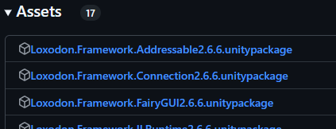
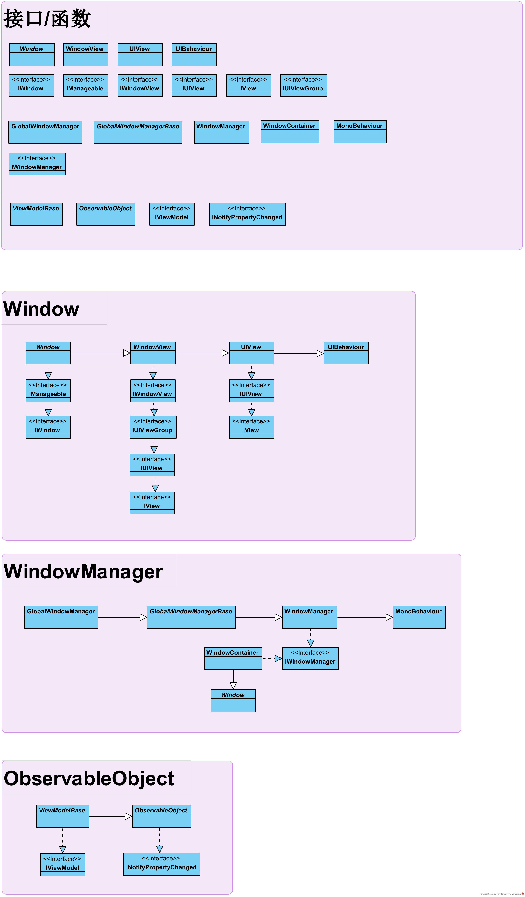
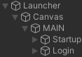
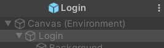
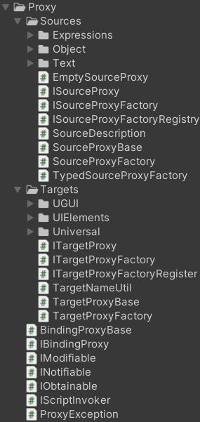
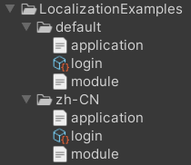

简述
LoxodonFramework是一套基于Unity的UI框架
它自称为MVVM+数据绑定框架
但从项目结构来看，是
优点 - 体系完整，内容多
- 提供Lua方案
- 有大量案例以及说明文档
缺点 - 咱无
该框架并没有着重于表现效果(如LunaUI)，是比较
在文档中其实已经提及其关键特性，这里再从项目结构上来看一下：
我们也能看到除此以外的内容：
- Editor---编辑器工具
- PackageResources
- Examples---完整解决方案
- Tutorials---单项解决方案
可以看到就是那么的
研究后会发现：该框架是以扩展的形式添加非必须内容的，在github上有各个包可供下载：

这也是一个非常不错的选择，可以
分析
分层架构
在文档的最后提到了其使用的分层架构，这大概最符合我们所说的框架的部分，其项目目录如下所示：
- 表现层
- View
- ViewModel
- 服务层
- Service
- 领域层(Domain Model，可以认为是Model)
- 基础层
- 框架
- 各类组件(如网络/Log/...)
- 辅助类
R.cs是什么
基础层就是
领域层+表现层就是
服务层就是
大致浏览代码后可以发现一些基础规则：
- Launcher.cs进行初始化设置操作
- View脚本继承自Window
- Model脚本(领域)继承自ObservableObject
- ViewModel脚本继承自ViewModelBase
业务层面分析
既然我们了解了框架的分层架构方式，那么就来详细看一下这些部分的用法
Domains
Domains就是领域层，在该示例中，仅有一个脚本Account：
public class Account : ObservableObject
{
private string username;
private string password;
private DateTime created;
public string Username {
get{ return this.username; }
set{ this.Set(ref this.username, value); }
}
public string Password {
get{ return this.password; }
set{ this.Set(ref this.password, value); }
}
public DateTime Created {
get{ return this.created; }
set{ this.Set(ref this.created, value); }
}
}
就从代码上来看和Model无异
首先我们需要理解一下
ObservableObject简述
那么先来看一下其声明：
[Serializable]
public abstract class ObservableObject : INotifyPropertyChanged
可以看到这里继承了WPFMVVM中使用的
总结一下是这样的：
- PropertyChanged---INotifyPropertyChanged事件本身
Set()---更新参数RaisePropertyChanged()---触发ParserPropertyName()---表达式树转换
所以简单来说就是
而这里最关键的就是：PropertyChanged的事件订阅
在代码中，我们并不能发现任何有关订阅的内容，显然这被隐藏在其自动订阅机制中了
也就是框架中的
不考虑底层，对我们来说使用起来是非常方便的
Views
Views就是视图，以LoginWindow为例：
public class LoginWindow : Window
{
//private static readonly ILog log = LogManager.GetLogger(typeof(LoginWindow));
public InputField username;
public InputField password;
public Text usernameErrorPrompt;
public Text passwordErrorPrompt;
public Button confirmButton;
public Button cancelButton;
private ToastInteractionAction toastAction;
protected override void OnCreate(IBundle bundle)
{
this.toastAction = new ToastInteractionAction(this);
BindingSet<LoginWindow, LoginViewModel> bindingSet = this.CreateBindingSet<LoginWindow, LoginViewModel>();
bindingSet.Bind().For(v => v.OnInteractionFinished).To(vm => vm.InteractionFinished);
bindingSet.Bind().For(v => v.toastAction).To(vm => vm.ToastRequest);
bindingSet.Bind(this.username).For(v => v.text, v => v.onEndEdit).To(vm => vm.Username).TwoWay();
bindingSet.Bind(this.usernameErrorPrompt).For(v => v.text).To(vm => vm.Errors["username"]).OneWay();
bindingSet.Bind(this.password).For(v => v.text, v => v.onEndEdit).To(vm => vm.Password).TwoWay();
bindingSet.Bind(this.passwordErrorPrompt).For(v => v.text).To(vm => vm.Errors["password"]).OneWay();
bindingSet.Bind(this.confirmButton).For(v => v.onClick).To(vm => vm.LoginCommand);
bindingSet.Bind(this.cancelButton).For(v => v.onClick).To(vm => vm.CancelCommand);
bindingSet.Build();
}
public virtual void OnInteractionFinished(object sender, InteractionEventArgs args)
{
this.Dismiss();
}
}
我们可以得知：
- 需要进行初始化绑定操作
- 需要手动将该脚本挂载在GameObject上
- 继承自Window，同时也一定是一个MonoBehaviour脚本
从中我们已经可以简单地了解到绑定的基本信息：
BindingSet<LoginWindow, LoginViewModel>表明了View与ViewModel的具体对象，即View-LoginWindow以及ViewModel-LoginViewModel绑定方式为从(For)A的某属性到(To)B
显然直接看是看不出太多的，再稍微看一下其
Window简述
Window代码不长(500行)，但还是略显复杂的，其声明为：
[DisallowMultipleComponent]
public abstract class Window : WindowView, IWindow, IManageable
简单看一下代码，大致来说就是：
在这个项目中就有2个：StartupWindow用于启动界面，LoginWindow用于登录界面，每个界面都是一个Window
简单看一下代码，大致会发现内容就是对接口的实现，显然其本质是一条继承链：Window->WindowView->UIView
ViewModels
ViewModels就是使用层面上的Models了，
在LoginViewModel话就是在领域层的Account基础上进行的
可以看到就是一个构造函数以及一些函数/属性：
public LoginViewModel(IAccountService accountService, Localization localization, Preferences globalPreferences)
{
this.localization = localization;
this.accountService = accountService;
this.globalPreferences = globalPreferences;
this.interactionFinished = new InteractionRequest(this);
this.toastRequest = new InteractionRequest<ToastNotification>(this);
if (this.username == null)
{
this.username = globalPreferences.GetString(LAST_USERNAME_KEY, "");
}
this.loginCommand = new SimpleCommand(this.Login);
this.cancelCommand = new SimpleCommand(() =>
{
this.interactionFinished.Raise();/* Request to close the login window */
});
}
public string Username
{
get { return this.username; }
set
{
if (this.Set(ref this.username, value))
{
this.ValidateUsername();
}
}
}
public string Password
{
get { return this.password; }
set
{
if (this.Set(ref this.password, value))
{
this.ValidatePassword();
}
}
}
public ICommand LoginCommand
{
get { return this.loginCommand; }
}
public ICommand CancelCommand
{
get { return this.cancelCommand; }
}
public Account Account
{
get { return this.account; }
}
可以发现这些内容都是View中绑定的内容，如：bindingSet.Bind().For(v => v.OnInteractionFinished).To(vm => vm.InteractionFinished);bindingSet.Bind(this.confirmButton).For(v => v.onClick).To(vm => vm.LoginCommand);LoginViewModel.Login()bindingSet.Bind(this.username).For(v => v.text, v => v.onEndEdit).To(vm => vm.Username).TwoWay();
可以说
ViewModelBase简述
可以看到ViewModel是需要继承自ViewModelBase的，其定义为：public abstract class ViewModelBase : ObservableObject, IViewModel
而ObservableObject就是前面提到的Domains的继承类，所以ViewModel就是在此基础上再多了一些特性，由IViewModel可得知：多了一个IDisposable接口以及归属于IViewModel
Command/InteractionRequest/InteractionAction简述
前面提到了一些绑定内容，有两种涉及到了类型：
- Command---熟悉的命令，也就是封装了按钮的操作
- InteractionRequest---交互请求
Command我们大概率很熟悉，就是一个分离出来的函数而已，但问题是：
浏览实例代码后可以大概了解其用法：
// LoginViewModel
public LoginViewModel(IAccountService accountService, Localization localization, Preferences globalPreferences)
{
this.interactionFinished = new InteractionRequest(this);
this.toastRequest = new InteractionRequest<ToastNotification>(this);
this.cancelCommand = new SimpleCommand(() =>
{
this.interactionFinished.Raise(); // Raise即调用
});
}
public async void Login()
{
try
{
// 其中会执行：
this.interactionFinished.Raise();
this.toastRequest.Raise(new ToastNotification(tipContent, 2f));
}
catch (Exception e){}
finally{}
}
// LoginWindow
protected override void OnCreate(IBundle bundle)
{
this.toastAction = new ToastInteractionAction(this);
BindingSet<LoginWindow, LoginViewModel> bindingSet = this.CreateBindingSet<LoginWindow, LoginViewModel>();
bindingSet.Bind().For(v => v.OnInteractionFinished).To(vm => vm.InteractionFinished);
bindingSet.Bind().For(v => v.toastAction).To(vm => vm.ToastRequest);
// ...
bindingSet.Build();
}
public virtual void OnInteractionFinished(object sender, InteractionEventArgs args)
{
this.Dismiss();
}
精简一下就是：
观察上述代码，可以注意到执行函数有两种：
- InteractionFinished使用了View函数OnInteractionFinished
- ToastRequest使用了ToastInteractionAction实例
既然是一个类，那么就可以复用在任何View中
Services简述
在ViewModel中，存在服务层内容，可以看到在构造函数中就添加了一个IAccountService，即AccountService：
public class AccountService : IAccountService
{
private IAccountRepository repository;
private IMessenger messenger;
public IMessenger Messenger { get { return messenger; } }
public AccountService(IAccountRepository repository)
{
this.repository = repository;
this.messenger = new Messenger();
}
public virtual async Task<Account> Register(Account account)
{
// ...
}
public virtual async Task<Account> Update(Account account)
{
// ...
}
public virtual async Task<Account> Login(string username, string password)
{
// ...
}
public virtual Task<Account> GetAccount(string username)
{
// ...
}
}
可以看到：作为一个服务，存储了Account数据(IAccountRepository即Account组)，并用该数据提供服务函数
其中：
观察ViewModel代码，还能发现其中的
其它
除了上述内容外，还有一些没有提及的脚本，这里来简单看一下：
- Locator
- Localization
Localization简述
Localization也就是本地化，在该示例中有2个脚本：
- AssetBundleDataProvider
- ResourcesDataProvider
它们都继承于
namespace Loxodon.Framework.Localizations
{
public interface IDataProvider
{
Task<Dictionary<string, object>> Load(CultureInfo cultureInfo);
}
}
由其命名空间可知，
查询接口的使用，我们可以发现在Localization.cs中使用到了：
protected virtual async Task Load(params ProviderEntry[] providers)
{
if (providers == null || providers.Length <= 0)
return;
int count = providers.Length;
var cultureInfo = this.CultureInfo;
for (int i = 0; i < count; i++)
{
try
{
var entry = providers[i];
var provider = entry.Provider;
var dict = await provider.Load(cultureInfo);
OnLoadCompleted(entry, dict);
}
catch (Exception) { }
}
}
可以看得出
Locator简述
Locator即定位器，也就是
简单来说功能就是：
核心点：
在Launcher.cs中，是这么注册以及使用的：
public class Launcher : MonoBehaviour
{
//private static readonly ILog log = LogManager.GetLogger(System.Reflection.MethodBase.GetCurrentMethod().DeclaringType);
private ApplicationContext context;
ISubscription<WindowStateEventArgs> subscription;
void Awake()
{
// ...
/* Initialize the ui view locator and register UIViewLocator */
container.Register<IUIViewLocator>(new ResourcesViewLocator());
// ...
}
IEnumerator Start()
{
// ...
IUIViewLocator locator = context.GetService<IUIViewLocator>();
StartupWindow window = locator.LoadWindow<StartupWindow>(winContainer, "UI/Startup/Startup");
window.Create();
// ...
}
}
也就是说：
在该示例中，类为ResourcesViewLocator，它继承于
Launcher
前面也提到过，Launcher为初始化核心入口
如果稍微仔细一点看的话整体内容基本都清晰了：
public class Launcher : MonoBehaviour
{
private ApplicationContext context;
ISubscription<WindowStateEventArgs> subscription;
void Awake()
{
// 界面中肯定存在一个带有GlobalWindowManagerBase的GameObject(在Canvas)
GlobalWindowManagerBase windowManager = FindObjectOfType<GlobalWindowManagerBase>();
if (windowManager == null)
throw new NotFoundException("Not found the GlobalWindowManager.");
// 上下文
context = Context.GetApplicationContext();
// 上下文可以获取容器
IServiceContainer container = context.GetContainer();
// 启动数据绑定内置服务
BindingServiceBundle bundle = new BindingServiceBundle(context.GetContainer());
bundle.Start();
// 在容器中注册ResourcesViewLocator
container.Register<IUIViewLocator>(new ResourcesViewLocator());
// 在容器中注册Localization
CultureInfo cultureInfo = Locale.GetCultureInfo();
var localization = Localization.Current;
localization.CultureInfo = cultureInfo;
localization.AddDataProvider(new ResourcesDataProvider("LocalizationExamples", new XmlDocumentParser()));
container.Register<Localization>(localization);
// 在容器中注册AccountService
IAccountRepository accountRepository = new AccountRepository();
container.Register<IAccountService>(new AccountService(accountRepository));
// 全局开启设置
GlobalSetting.enableWindowStateBroadcast = true;
GlobalSetting.useBlocksRaycastsInsteadOfInteractable = true;
// 订阅Window.Messenger
subscription = Window.Messenger.Subscribe<WindowStateEventArgs>(e =>
{
Debug.LogFormat("The window[{0}] state changed from {1} to {2}", e.Window.Name, e.OldState, e.State);
});
}
IEnumerator Start()
{
// 创建窗口容器
WindowContainer winContainer = WindowContainer.Create("MAIN");
yield return null;
// 创建窗口
IUIViewLocator locator = context.GetService<IUIViewLocator>();
StartupWindow window = locator.LoadWindow<StartupWindow>(winContainer, "UI/Startup/Startup");
window.Create();
// 事件监听
ITransition transition = window.Show().OnStateChanged((w, state) =>
{
//log.DebugFormat("Window:{0} State{1}",w.Name,state);
});
yield return transition.WaitForDone();
}
}
可以看到基本上就是前面提到的内容，除此以外就是内置的一些功能了
框架层面分析
如果只观察业务层的代码，只是稍微了解了一下该框架的使用方式，框架的本质才是我们所需要观察的内容
该项目是
- 核心部分主要聚焦于2个内容上：绑定/UI
- 辅助的话就是一些上下文/容器/配置/本地化之类的内容
宏
这里先提前看一下宏，我们经常会在代码中看到：#elif NETFX_CORE || !NET_LEGACY
Microsoft官方文档
以上是官方文档，大致有：NETFX_CORE是为了适配UMP代码
如果是.NET脚本后端，使用NETFX_CORE即可，但如果是如IL2CPP等后端，则需要改用ENABLE_WINMD_SUPPORT
UI框架
UI框架是我们所希望了解的重点，MVVM必然基于它
首先在这里列出UML类图供参考：

核心
通过前面示例的分析，我们根据其绑定，我们大概可以了解到：
View(Window)与ViewModel(ViewModelBase)两者进行绑定，如：BindingSet<LoginWindow, LoginViewModel> bindingSet = this.CreateBindingSet<LoginWindow, LoginViewModel>();
所以核心肯定在Window与ViewModelBase以及绑定机制上了
这里先简单看一下创建函数：
public static BindingSet<TBehaviour, TSource> CreateBindingSet<TBehaviour, TSource>(this TBehaviour behaviour) where TBehaviour : Behaviour
{
IBindingContext context = behaviour.BindingContext();
return new BindingSet<TBehaviour, TSource>(context, behaviour);
}
显然
Window
Window是视图的关键，继承链如下：Window : WindowView, IWindow, IManageableWindowView : UIView, IWindowViewUIView : UIBehaviour, IUIViewUIBehaviour : MonoBehaviour
可以看到其中一个设计原则就是：
既然如此，那么当然先从底层代码看起，简单来说：
- 两个事件：开启/关闭
protected override void OnEnable()
{
base.OnEnable();
this.OnVisibilityChanged();
this.RaiseOnEnabled();
}
protected override void OnDisable()
{
this.OnVisibilityChanged();
base.OnDisable();
this.RaiseOnDisabled();
}
protected virtual void OnVisibilityChanged()
{
}
private EventHandler onDisabled;
private EventHandler onEnabled;
protected void RaiseOnEnabled()
{
try
{
if (this.onEnabled != null)
this.onEnabled(this, EventArgs.Empty);
}
catch (Exception e)
{
if (log.IsWarnEnabled)
log.WarnFormat("{0}", e);
}
}
protected void RaiseOnDisabled()
{
try
{
if (this.onDisabled != null)
this.onDisabled(this, EventArgs.Empty);
}
catch (Exception e)
{
if (log.IsWarnEnabled)
log.WarnFormat("{0}", e);
}
}
- 组件属性
- Name：
gameObject.name - Parent：
transform.parent - Owner：
gameObject - Transform：
transform - Visibility：gameObject可见性
- RectTransform：组件
- CanvasGroup：组件
- Alpha：
CanvasGroup.alpha - Interactable：
CanvasGroup.interactable
- Alpha：
- Name：
- 附加属性
- EnterAnimation/ExitAnimation：IAnimation
- ExtraAttributes：IAttributes
所以这里就是一些基础建设，
其中可以发现：
大致观察代码后就会发现：
要注意的是WindowView也继承自UIView，那么这说明：
其内容是简单明了的：
- 属性
- Views：IUIView的集合
- ActivationAnimation/PassivationAnimation：IAnimation
- 函数
- GetView()
- AddView()
- RemoveView()
其中可以发现：
然后就是Window本体了，内容看起来挺多
那么先从接口观察一下：
public interface IManageable : IWindow
{
// 控制窗口显隐
IAsyncResult Activate(bool ignoreAnimation);
IAsyncResult Passivate(bool ignoreAnimation);
IAsyncResult DoShow(bool ignoreAnimation = false);
IAsyncResult DoHide(bool ignoreAnimation = false);
void DoDismiss();
}
public interface IWindow
{
// 作为Window需要的内容
event EventHandler VisibilityChanged;
event EventHandler ActivatedChanged;
event EventHandler OnDismissed;
event EventHandler<WindowStateEventArgs> StateChanged;
string Name { get; set; }
bool Created { get; }
bool Dismissed { get; }
bool Visibility { get; }
bool Activated { get; }
IWindowManager WindowManager { get; set; }
WindowType WindowType { get; set; }
int WindowPriority { get; set; }
void Create(IBundle bundle = null);
ITransition Show(bool ignoreAnimation = false);
ITransition Hide(bool ignoreAnimation = false);
ITransition Dismiss(bool ignoreAnimation = false);
}
可以看到可以分为2个部分：作为窗口的能力以及作为管理者的能力
这里找了几个比较关键的内容：
WindowState state：当前状态(如CREATE_BEGIN开始创建)IWindowManager windowManager：窗口管理器WindowType windowType：窗口类型- Create()：其实是初始化，核心：
this.WindowManager.Add(this); - Show()/Hide()/Dismiss()：显示/隐藏/删除
可以看出其中最关键的就是windowManager：
public IWindowManager WindowManager
{
get { return this.windowManager ?? (this.windowManager = GameObject.FindObjectOfType<GlobalWindowManagerBase>()); }
set { this.windowManager = value; }
}
由此，我们可以知道，UI最终的管理类为GlobalWindowManager(Base)
GlobalWindowManager
既然能够被GameObject.FindObjectOfType()，那么就说明是一个MonoBehaviour
但具体的还是要看类：
[RequireComponent(typeof(RectTransform), typeof(Canvas))]
public class GlobalWindowManager : GlobalWindowManagerBase
{
}
这意味着它是挂载在Canvas下的
其父类GlobalWindowManagerBase也很简单：
[DisallowMultipleComponent]
public abstract class GlobalWindowManagerBase : WindowManager
{
public static GlobalWindowManagerBase Root;
protected virtual void Start()
{
Root = this;
}
protected override void OnDestroy()
{
base.OnDestroy();
Root = null;
}
}
可以说该Manager是一个"单例"
那么核心其实就在WindowManager中了，其声明如下：public class WindowManager : MonoBehaviour, IWindowManager
通过接口我们即可知道其作用：
public interface IWindowManager
{
bool Activated { get; set; }
IWindow Current { get; }
int Count { get; }
IEnumerator<IWindow> Visibles();
IWindow Get(int index);
void Add(IWindow window);
bool Remove(IWindow window);
IWindow RemoveAt(int index);
bool Contains(IWindow window);
int IndexOf(IWindow window);
List<IWindow> Find(bool visible);
T Find<T>() where T : IWindow;
T Find<T>(string name) where T : IWindow;
List<T> FindAll<T>() where T : IWindow;
void Clear();
ITransition Show(IWindow window);
ITransition Hide(IWindow window);
ITransition Dismiss(IWindow window);
}
可以看得出这的的确确就是一个管理类，
核心也就是：List<IWindow> windows所有Window | IWindow Current当前Window
所有的操作都必然围绕着它们进行
以上基本上就是Window本身的信息了，为了获得更多信息，Launcher.cs是值得关注的：
在Start()中有：WindowContainer winContainer = WindowContainer.Create("MAIN");
先看声明：public class WindowContainer : Window, IWindowManager
我们会发现它是继承于Window又同时实现IWindowManager，这说明：
该类所做的操作就是
public IWindow Get(int index)
{
return localWindowManager.Get(index);
}
核心在创建上：
public static WindowContainer Create(string name)
{
return Create(null, name);
}
public static WindowContainer Create(IWindowManager windowManager, string name)
{
GameObject root = new GameObject(name, typeof(CanvasGroup));
RectTransform rectTransform = root.AddComponent<RectTransform>();
rectTransform.anchorMin = Vector2.zero;
rectTransform.anchorMax = Vector2.one;
rectTransform.offsetMax = Vector2.zero;
rectTransform.offsetMin = Vector2.zero;
rectTransform.pivot = new Vector2(0.5f, 0.5f);
rectTransform.localPosition = Vector3.zero;
WindowContainer container = root.AddComponent<WindowContainer>();
container.WindowManager = windowManager;
container.Create();
container.Show(true);
return container;
}
private IWindowManager localWindowManager;
protected override void OnCreate(IBundle bundle)
{
/* Create Window View */
this.WindowType = WindowType.FULL;
this.localWindowManager = this.CreateWindowManager();
}
protected virtual IWindowManager CreateWindowManager()
{
return this.gameObject.AddComponent<WindowManager>();
}
我们可以得知：WindowContainer.Create()后可以得到一个WindowContainer实例，同时OnCreate()的重写会在GameObject中添加一个LocalWindowManager
实际情况如下：

new GameObject()创建应该在根物体上才对container.Create()之中，逻辑比较复杂：// 由于container继承于Window，所以会找到Window.Create(null)
public void Create(IBundle bundle = null)
{
if (this.dismissTransition != null || this.dismissed)
throw new ObjectDisposedException(this.Name);
if (this.created)
return;
this.State = WindowState.CREATE_BEGIN;
this.Visibility = false;
this.Interactable = this.Activated;
this.WindowManager.Add(this); // 在这
this.OnCreate(bundle);
this.created = true;
this.State = WindowState.CREATE_END;
}
// 事实上是通过GlobalWindowManager进行操作：在其中添加WindowContainer(一个Window)
public virtual void Add(IWindow window)
{
if (window == null)
throw new ArgumentNullException("window");
if (this.windows.Contains(window))
return;
this.windows.Add(window);
this.AddChild(GetTransform(window));
}
protected virtual void AddChild(Transform child, bool worldPositionStays = false)
{
if (child == null || this.transform.Equals(child.parent))
return;
child.gameObject.layer = this.gameObject.layer;
child.SetParent(this.transform, worldPositionStays);
child.SetAsFirstSibling();
}
由以上内容，我们能深刻地感受到：
WindowContainer是Window，Window派生类也是Window
几个类相互配合完成了Window的定义
ViewModelBase
上述Window/WindowManager是用于实现View的，那么ViewModelBase则是用于实现ViewModel的
其声明为：public abstract class ViewModelBase : ObservableObject, IViewModel
前文已有所提及：
- ObservableObject是domain的基础
- ViewModelBase则是在此基础上实现IViewModel
来看一下其接口IViewModel：public interface IViewModel : IDisposable
可以发现是除了IDisposable机制外是空接口，那么这说明
那么再来看一下类本身，内容不多：
IMessenger messenger：用于Broadcast()Set<T>()
简单来说Set()就是类的唯一功能
但是结合ObservableObject来看，这只是
也就是说
所以：
动画
在WindowContainer.Create()中，除了上述的container.Create()外，同样重要的就是container.Show(true)了：
// Window
public ITransition Show(bool ignoreAnimation = false)
{
if (this.dismissTransition != null || this.dismissed)
throw new InvalidOperationException("The window has been destroyed");
if (this.Activated)
return new CompletedTransition(this);
if (this.Visibility)
DoHide(true);
return this.WindowManager.Show(this).DisableAnimation(ignoreAnimation);
}
// WindowManager
public ITransition Show(IWindow window)
{
ShowTransition transition = new ShowTransition(this, (IManageable)window);
GetTransitionExecutor().Execute(transition); // **Tip：过渡操作在这**
return transition.OnStateChanged((w, state) =>
{
/* Control the layer of the window */
if (state == WindowState.VISIBLE)
this.MoveToIndex(w, transition.Layer);
//if (state == WindowState.INVISIBLE)
// this.MoveToLast(w);
});
}
由此，我们可以很明确地知道：
那么就先来详细看看UI框架的动画部分
可以看到
public interface ITransition
{
bool IsDone { get; }
object WaitForDone();
#if NETFX_CORE || NET_STANDARD_2_0 || NET_4_6
IAwaiter GetAwaiter();
#endif
ITransition DisableAnimation(bool disabled);
ITransition AtLayer(int layer);
ITransition Overlay(Func<IWindow, IWindow, ActionType> policy);
ITransition OnStart(Action callback);
ITransition OnStateChanged(Action<IWindow, WindowState> callback);
ITransition OnFinish(Action callback);
}
由此我们可以看出
在其
public virtual IEnumerator TransitionTask()
{
this.running = true;
this.OnStart();
#if UNITY_5_3_OR_NEWER
yield return this.DoTransition();
#else
var transitionAction = this.DoTransition();
while (transitionAction.MoveNext())
yield return transitionAction.Current;
#endif
this.OnEnd();
}
protected abstract IEnumerator DoTransition();
DoTransition()就是最关键的动画操作
protected override IEnumerator DoTransition()
{
// 拿这一个
IManageable current = this.Window;
int layer = (this.Layer < 0 || current.WindowType == WindowType.DIALOG || current.WindowType == WindowType.PROGRESS) ? 0 : this.Layer;
if (layer > 0)
{
int visibleCount = this.manager.VisibleCount;
if (layer > visibleCount)
layer = visibleCount;
}
this.Layer = layer;
// 关上一个
IManageable previous = (IManageable)this.manager.GetVisibleWindow(layer);
if (previous != null)
{
if (previous.Activated)
{
// 失活
IAsyncResult passivate = previous.Passivate(this.AnimationDisabled);
yield return passivate.WaitForDone();
}
// 获取ActionType
Func<IWindow, IWindow, ActionType> policy = this.OverlayPolicy;
if (policy == null)
policy = this.Overlay;
ActionType actionType = policy(previous, current);
// DoHide操作
switch (actionType)
{
case ActionType.Hide:
previous.DoHide(this.AnimationDisabled);
break;
case ActionType.Dismiss:
previous.DoHide(this.AnimationDisabled).Callbackable().OnCallback((r) =>
{
previous.DoDismiss();
});
break;
default:
break;
}
}
// DoShow操作
if (!current.Visibility)
{
IAsyncResult show = current.DoShow(this.AnimationDisabled);
yield return show.WaitForDone();
}
// 激活
if (this.manager.Activated && current.Equals(this.manager.Current))
{
IAsyncResult activate = current.Activate(this.AnimationDisabled);
yield return activate.WaitForDone();
}
}
public virtual IAsyncResult DoShow(bool ignoreAnimation = false)
{
AsyncResult result = new AsyncResult();
try
{
if (!this.created)
this.Create();
this.OnShow();
this.Visibility = true; // **这其实也是关键之一，会setActive(true)**
this.State = WindowState.VISIBLE;
if (!ignoreAnimation && this.EnterAnimation != null)
{
this.EnterAnimation.OnStart(() =>
{
this.State = WindowState.ENTER_ANIMATION_BEGIN;
}).OnEnd(() =>
{
this.State = WindowState.ENTER_ANIMATION_END;
result.SetResult();
}).Play();
}
else
{
result.SetResult();
}
}
catch (Exception e)
{
result.SetException(e);
if (log.IsWarnEnabled)
log.WarnFormat("The window named \"{0}\" failed to open!Error:{1}", this.Name, e);
}
return result;
}
public virtual IAsyncResult Activate(bool ignoreAnimation)
{
AsyncResult result = new AsyncResult();
try
{
if (!this.Visibility)
{
result.SetException(new InvalidOperationException("The window is not visible."));
return result;
}
if (this.Activated)
{
result.SetResult();
return result;
}
if (!ignoreAnimation && this.ActivationAnimation != null)
{
this.ActivationAnimation.OnStart(() =>
{
this.State = WindowState.ACTIVATION_ANIMATION_BEGIN;
}).OnEnd(() =>
{
this.State = WindowState.ACTIVATION_ANIMATION_END;
this.Activated = true;
this.State = WindowState.ACTIVATED;
result.SetResult();
}).Play();
}
else
{
this.Activated = true;
this.State = WindowState.ACTIVATED;
result.SetResult();
}
}
catch (Exception e)
{
result.SetException(e);
}
return result;
}
在DoShow()中，EnterAnimation进行了OnStart()/OnEnd()的设置并执行了Play()，在Activate()中的ActivationAnimation同样如此，此时我们可能会有疑问
首先先看一下Animation所属的IAnimation：
public interface IAnimation
{
IAnimation OnStart(Action onStart);
IAnimation OnEnd(Action onEnd);
IAnimation Play();
}
它们来自于

在Login界面中，Login根物体上除了基本的LoginWindow组件外，还挂载了两个动画组件
在其
OnEnable()就可以发现设置操作：
void OnEnable()
{
this.view = this.GetComponent<IUIView>();
switch (this.AnimationType)
{
case AnimationType.EnterAnimation:
this.view.EnterAnimation = this;
break;
case AnimationType.ExitAnimation:
this.view.ExitAnimation = this;
break;
case AnimationType.ActivationAnimation:
if (this.view is IWindowView)
(this.view as IWindowView).ActivationAnimation = this;
break;
case AnimationType.PassivationAnimation:
if (this.view is IWindowView)
(this.view as IWindowView).PassivationAnimation = this;
break;
}
if (this.AnimationType == AnimationType.ActivationAnimation || this.AnimationType == AnimationType.EnterAnimation)
{
this.view.CanvasGroup.alpha = from;
}
}
事实上渐隐操作本身很简单：
public override IAnimation Play()
{
this.StartCoroutine(DoPlay());
return this;
}
IEnumerator DoPlay()
{
this.OnStart();
var delta = (to - from) / duration;
var alpha = from;
this.view.Alpha = alpha;
if (delta > 0f)
{
while (alpha < to)
{
alpha += delta * Time.deltaTime;
if (alpha > to)
{
alpha = to;
}
this.view.Alpha = alpha;
yield return null;
}
}
else
{
while (alpha > to)
{
alpha += delta * Time.deltaTime;
if (alpha < to)
{
alpha = to;
}
this.view.Alpha = alpha;
yield return null;
}
}
this.OnEnd();
}
本质上就是this.CanvasGroup.alpha
ActivationAnimation/PassivationAnimation是WindowView的操作
但事实上和这个无关，因为只有Window才具有IManageable，这也就意味着两种情况都是一个Window，是UIView或WindowView的子类
两者的区别实际在于功能：
if (!current.Visibility)
{
IAsyncResult show = current.DoShow(this.AnimationDisabled);
yield return show.WaitForDone();
}
if (this.manager.Activated && current.Equals(this.manager.Current))
{
IAsyncResult activate = current.Activate(this.AnimationDisabled);
yield return activate.WaitForDone();
}
以上是前面提到的AlphaAnimation的部分操作，可以看到两者的前提条件：
Doshow()---window不可见(GameObject失活状态)Activate()---激活状态且window就是激活window(置顶)
可以看到：Doshow()只是打开界面，而Activate()是激活界面，是开启后可能的操作
连点实现
可以看到，在代码中常常会出现连点的形式，就比如说Launcher.cs中有：window.Show().OnStateChanged((w, state) => {...}
之所以能够连点就是因为其实现方式：Show()是其核心操作，只要操作能够返回ITransition，就能为其添加这些事件，也就是说Window.Show()，本质上其实是WindowManager.Show()，在这里创了一个ShowTransition，也就是一个ITransiton，然后执行transition.OnStateChanged()调用了一个事件添加函数，返回的依旧是ITransiton，在此基础上又进行了.DisableAnimation()返回一个ITransiton，最后.OnStateChanged()依旧返回一个ITransiton
动画总结
这里先来简单地对动画类进行汇总：
- ITransition：渐变动画核心
- 派生Transition，再派生业务类XXXTransition
- 核心操作：
TransitionTask()，即执行业务类实现的DoTransition()操作
- IAnimation：
DoTransition()操作的核心，即播放动画- 派生UIAnimation，再派生AlphaAnimation，也就是一般用的最基础的渐变动画
- 是一个挂载脚本(MonoBehaviour)
- 挂载脚本后会自动将自身注册进Window中
核心流程：
window.Show()this.WindowManager.Show()，即通过GlobalWindowManager进行操作GetTransitionExecutor().Execute(showTransition)Executors.RunOnCoroutine(this.DoTask())Executors.RunOnCoroutine(transition.TransitionTask())DoTransition()- 一般来说会是一个
IAnimation.Play()
流程非常复杂，但总的来说核心就是IAnimation.Play()触发动画本身
绑定
在上述的分析中，我们已经把UI框架的类大致分析了一遍，虽然我们对其用法已经有了了解，但是我们无法将ViewModel与View联系起来
那么核心其实就在View进行的绑定上
回顾一下LoginWindow.cs的OnCreate()：
protected override void OnCreate(IBundle bundle)
{
this.toastAction = new ToastInteractionAction(this);
BindingSet<LoginWindow, LoginViewModel> bindingSet = this.CreateBindingSet<LoginWindow, LoginViewModel>();
bindingSet.Bind().For(v => v.OnInteractionFinished).To(vm => vm.InteractionFinished);
//bindingSet.Bind().For(v => v.OnToastShow).To(vm => vm.ToastRequest);
bindingSet.Bind().For(v => v.toastAction).To(vm => vm.ToastRequest);
bindingSet.Bind(this.username).For(v => v.text, v => v.onEndEdit).To(vm => vm.Username).TwoWay();
bindingSet.Bind(this.usernameErrorPrompt).For(v => v.text).To(vm => vm.Errors["username"]).OneWay();
bindingSet.Bind(this.password).For(v => v.text, v => v.onEndEdit).To(vm => vm.Password).TwoWay();
bindingSet.Bind(this.passwordErrorPrompt).For(v => v.text).To(vm => vm.Errors["password"]).OneWay();
bindingSet.Bind(this.confirmButton).For(v => v.onClick).To(vm => vm.LoginCommand);
bindingSet.Bind(this.cancelButton).For(v => v.onClick).To(vm => vm.CancelCommand);
bindingSet.Build();
}
这就是我们所做的绑定操作
在文档中提到了绑定的前置---启动服务：
context = Context.GetApplicationContext();
BindingServiceBundle bundle = new BindingServiceBundle(context.GetContainer());
bundle.Start();
Context
可以看到，要启动服务，首先需要在构造函数中传入一个context的Container，也就是
其声明为：public class ApplicationContext : Contextpublic class Context : IDisposable
观察两个类，可以发现
在Context.cs中：private static ApplicationContext context = null;private static Dictionary<string, Context> contexts = null;
显然，情况是：
- context是单例，存储着唯一ApplicationContext实例
- contexts存储着多个Context实例
Context.GetApplicationContext()获取全局的上下文即可
如需使用，其用法与单例的ApplicationContext完全一致，毕竟ApplicationContext也是一个Context
其作用当然是区分上下文，某些时候需要区分服务可能就会用到
其函数看起来很多，但实际上就几类：
- 上下文管理
(Add/Get/Remove)Context()(Set/Get)ApplicationContext)()
- 属性存取
Tip：这里的属性对应的就是C#中具有GetSet方法的那个属性，可用于全局存储属性值 Set()/Get()/Contains()/Remove()/GetEnumerator()
- 服务相关
GetContainer()---获取容器(可在其中注册服务) GetService()---获取服务
回顾上述用法new BindingServiceBundle(context.GetContainer())，我们可以发现context.GetContainer()是服务所需的关键
回到ApplicationContext，它也就是充当核心主Context，具有一些额外的特性：
IMainLoopExecutor mainLoopExecutor
这是一个Executor，在下方会提到其本质Executors
先看眼声明：public class MainLoopExecutor : AbstractExecutor, IMainLoopExecutor
public abstract class AbstractExecutor { static AbstractExecutor() { Executors.Create(); } } public interface IMainLoopExecutor { void RunOnMainThread(Action action, bool waitForExecution = false); TResult RunOnMainThread<TResult>(Func<TResult> func); }此处就可以清晰地了解到：
MainLoopExecutor是一个Executors的封装类，在执行前隐式执行了 Executors.Create()以正常启动Preferences
可以看到有2个：GetGlobalPreferences()GetUserPreferences()
它们本质上就是在调用Preferences.GetPreferences()
Preferences简述：一个持久化存储机制
Container简述
观察代码后会发现，为public class ServiceContainer : IServiceContainer, IDisposable
从名字我们就可以看出，这显然是一个
简单看一下接口：
public interface IServiceContainer : IServiceLocator, IServiceRegistry
{
}
public interface IServiceLocator
{
object Resolve(Type type);
T Resolve<T>();
object Resolve(string name);
T Resolve<T>(string name);
}
public interface IServiceRegistry
{
void Register(Type type, object target);
void Register<T>(T target);
void Register(string name, object target);
void Register<T>(string name, T target);
void Register<T>(Func<T> factory);
void Register<T>(string name, Func<T> factory);
void Unregister<T>();
void Unregister(Type type);
void Unregister(string name);
}
显然这是一个
其实从实际调用中也可以验证这一点：
// BindingServiceBundle服务开始时
protected override void OnStart(IServiceContainer container)
{
// ...
container.Register<IBinder>(binder);
container.Register<IBindingFactory>(bindingFactory);
container.Register<IConverterRegistry>(converterRegistry);
container.Register<IExpressionPathFinder>(expressionPathFinder);
container.Register<IPathParser>(pathParser);
container.Register<INodeProxyFactory>(objectSourceProxyFactory);
container.Register<INodeProxyFactoryRegister>(objectSourceProxyFactory);
container.Register<ISourceProxyFactory>(sourceFactory);
container.Register<ISourceProxyFactoryRegistry>(sourceFactory);
container.Register<ITargetProxyFactory>(targetFactory);
container.Register<ITargetProxyFactoryRegister>(targetFactory);
}
// 我们的注册也是如此
// Launcher.cs中
void Awake()
{
// ...
context = Context.GetApplicationContext();
IServiceContainer container = context.GetContainer();
container.Register<IUIViewLocator>(new ResourcesViewLocator());
container.Register<Localization>(localization);
container.Register<IAccountService>(new AccountService(accountRepository));
// ...
}
注册完就是获取，在Launcher.cs中有：IUIViewLocator locator = context.GetService<IUIViewLocator>();
那么BindingServiceBundle注册的服务一定也在某处使用到了
BindingServiceBundle
回到核心，也就是
先看声明：public class BindingServiceBundle : AbstractServiceBundlepublic abstract class AbstractServiceBundle : IServiceBundle
观察过后会发现非常简单：
public interface IServiceBundle
{
void Start();
void Stop();
}
public abstract class AbstractServiceBundle : IServiceBundle
{
private IServiceContainer container;
public AbstractServiceBundle(IServiceContainer container)
{
this.container = container;
}
public void Start()
{
this.OnStart(container);
}
protected abstract void OnStart(IServiceContainer container);
public void Stop()
{
this.OnStop(container);
}
protected abstract void OnStop(IServiceContainer container);
}
即：
那么具体实现就在BindingServiceBundle之中，简单观察，会发现有两种注册：
- Factory注册
- Container注册
Container注册在前面Container简述中已经有所提及，
在这里稍微再看一下Factory注册：
上述代码中有3个工厂：ObjectSourceProxyFactory/SourceProxyFactory/TargetProxyFactory
它们的继承类都有相似点但各不相同：ObjectSourceProxyFactory : TypedSourceProxyFactory<ObjectSourceDescription>, INodeProxyFactory, INodeProxyFactoryRegisterSourceProxyFactory : ISourceProxyFactory, ISourceProxyFactoryRegistryTargetProxyFactory : ITargetProxyFactory, ITargetProxyFactoryRegister
最核心的是几个函数：
CreateProxy()Register()Unregister()
List<PriorityFactoryPair> factories，其中Register()/UnRegister()是用于添加或删除的，而CreateProxy()是用于选择并创建的
// CreateProxy()的核心
protected virtual bool TryCreateProxy(object source, SourceDescription description, out ISourceProxy proxy)
{
proxy = null;
// 遍历factories(按priority排序)
foreach (PriorityFactoryPair pair in this.factories)
{
var factory = pair.factory;
if (factory == null)
continue;
try
{
// 工厂创建proxy
proxy = factory.CreateProxy(source, description);
if (proxy != null)
return true;
}
// ...
}
proxy = null;
return false;
}
这样看Factory是什么就显而易见了，即
简单总结一下两种注册：
- Factory注册：
一种具有优先级的Proxy创建工厂 - Container注册：
服务注册容器
所以我们只需要知道后续会通过factory.CreateProxy()/context.GetService()取出即可
绑定流程详解
创建
既然要分析绑定流程，那么还是需要从绑定操作本身来分析，首先做的当然是创建，有：BindingSet<LoginWindow, LoginViewModel> bindingSet = this.CreateBindingSet<LoginWindow, LoginViewModel>();
public static BindingSet<TBehaviour, TSource> CreateBindingSet<TBehaviour, TSource>(this TBehaviour behaviour) where TBehaviour : Behaviour
{
IBindingContext context = behaviour.BindingContext();
return new BindingSet<TBehaviour, TSource>(context, behaviour);
}
在核心中已经提及：
TBehaviour指代View，TSource指代ViewModel
那么我们再详细看一下创建内容：
首先就是一个IBindingContext的绑定，这绑定函数就在同类BehaviourBindingExtension中定义：
public static IBindingContext BindingContext(this Behaviour behaviour)
{
if (behaviour == null || behaviour.gameObject == null)
return null;
BindingContextLifecycle bindingContextLifecycle = behaviour.GetComponent<BindingContextLifecycle>();
if (bindingContextLifecycle == null)
bindingContextLifecycle = behaviour.gameObject.AddComponent<BindingContextLifecycle>();
IBindingContext bindingContext = bindingContextLifecycle.BindingContext;
if (bindingContext == null)
{
bindingContext = new BindingContext(behaviour, Binder);
bindingContextLifecycle.BindingContext = bindingContext;
}
return bindingContext;
}
简单来说就是：
大致查看源码，可知道两个类：
BindingContextLifecycle ：一个单纯的MonoBehaviour类，其中仅管理一个IBindingContext的生命周期BindingContext ：一个数据绑定管理类
Binding：builder部分
经过创建后接下来就是绑定操作，如：bindingSet.Bind(this.username).For(v => v.text, v => v.onEndEdit).To(vm => vm.Username).TwoWay();
查看public class BindingSet : BindingSetBasepublic abstract class BindingSetBase : IBindingBuilder
IBindingBuilder只要求了一个功能，即Build()
在BindingSetBase中有：
public virtual void Build()
{
foreach (var builder in this.builders)
{
try
{
builder.Build();
}
catch (Exception e)
{
if (log.IsErrorEnabled)
log.ErrorFormat("{0}", e);
}
}
this.builders.Clear();
}
功能很简单，就是对收集的builders进行Build()操作即可
这所对应的就是View代码中绑定的最后一句：bindingSet.Build();
那么Build()前当然需要的是Bind()即可完成添加
仔细观察这里的连点：BindingBuilder<>类型的，也就是说Bind()是在构建，其余的是在设置
先看Bind()：
public virtual BindingBuilder Bind(object target)
{
var builder = new BindingBuilder(context, target);
this.builders.Add(builder);
return builder;
}
BindingBuilder的声明是这样的： public class BindingBuilder : BindingBuilderBasepublic class BindingBuilderBase : IBindingBuilder
简单看一下BindingBuilder源码，会发现其函数都是
浏览代码后会发现：
绝大多数的函数都是SetXXX()，所操作的当然是其属性，有：
bool buildedobject scopeKeyobject targetIBindingContext contextBindingDescription description
除此以外还有2个功能属性：
IPathParser PathParserIConverterRegistry ConverterRegistry
最关键的当然是Build()：
public void Build()
{
try
{
if (this.builded)
return;
this.CheckBindingDescription();
this.context.Add(this.target, this.description, this.scopeKey);
this.builded = true;
}
catch (BindingException e)
{
throw e;
}
catch (Exception e)
{
throw new BindingException(e, "An exception occurred while building the data binding for {0}.", this.description.ToString());
}
}
看起来并没有做什么事，唯一的核心操作就是
结合来看：
一旦完成bindingSet.Build()，就会收集到最终的context
而context是BindingSet的成员，并分发给BindingBuilder
所以BindingSet.context中会收集到所有的绑定信息
BindingContext
由上述内容可知
IBindingContext如下所示：
public interface IBindingContext : IDisposable
{
event EventHandler DataContextChanged;
object Owner { get; }
object DataContext { get; set; }
void Add(IBinding binding,object key=null);
void Add(IEnumerable<IBinding> bindings,object key = null);
void Add(object target, BindingDescription description,object key = null);
void Add(object target, IEnumerable<BindingDescription> descriptions, object key = null);
void Clear(object key);
void Clear();
}
仅有的操作即添加Add()与清除Clear()
而属性Owner与DataContext查看其构造函数后就会发现是
// 核心构造函数
public BindingContext(object owner, IBinder binder, object dataContext)
{
this.owner = owner;
this.binder = binder;
this.DataContext = dataContext;
}
更具体一点，看一下创建使用的构造函数，有bindingContext = new BindingContext(behaviour, Binder)：public BindingContext(object owner, IBinder binder) : this(owner, binder, (object)null) {}
对应一下：
- owner---TBehaviour，即View实例脚本(如LoginWindow.cs)
- binder---IBinder服务
- DataContext---此处无
Add()就是前面Build()中会执行的操作：this.context.Add(this.target, this.description, this.scopeKey);
public virtual void Add(object target, BindingDescription description, object key = null)
{
IBinding binding = this.Binder.Bind(this, this.DataContext, target, description);
this.Add(binding, key);
}
public virtual void Add(IBinding binding, object key = null)
{
if (binding == null)
return;
List<IBinding> list = this.GetOrCreateList(key);
binding.BindingContext = this;
list.Add(binding);
}
可以看到
既然如此，IBinder服务就有必要查看了，回顾一下BindingServiceBundle.cs注册处：
BindingFactory bindingFactory = new BindingFactory(sourceFactory, targetFactory);
StandardBinder binder = new StandardBinder(bindingFactory);
container.Register<IBinder>(binder);
IBinder服务
可以看到StandardBinder是基于BindingFactory的
从名字上可以知道：这是一个用于绑定的工厂
内容上核心就是两个属性和一个函数：
ISourceProxyFactory sourceProxyFactoryITargetProxyFactory targetProxyFactoryCreate()
这两个工厂我们会非常熟悉，就是前面提到过的BindingServiceBundle的Factory注册
而Create()就是：
public IBinding Create(IBindingContext bindingContext, object source, object target, BindingDescription bindingDescription)
{
return new Binding(bindingContext, source, target, bindingDescription, this.sourceProxyFactory, this.targetProxyFactory);
}
可以看到在IBindingContext之上，还有更高级的IBinding的存在，这也就是
Binding的声明如下：public class Binding : AbstractBindingpublic abstract class AbstractBinding : IBinding
先看接口：
public interface IBinding : IDisposable
{
IBindingContext BindingContext { get; set; }
object Target { get; }
object DataContext { get; set; }
}
可以看到都是些属性，在AbstractBinding可以找到它们具体的内容：
- BindingContext---就是IBindingContext
- Target---一个
WeakReference - DataContext---就是DataContext(BindingContext中也有该属性)
而Binding通过收集到的信息完成了绑定操作，这一切都发生在构造函数中
public Binding(IBindingContext bindingContext, object source, object target, BindingDescription bindingDescription, ISourceProxyFactory sourceProxyFactory, ITargetProxyFactory targetProxyFactory) : base(bindingContext, source, target)
{
this.targetTypeName = target.GetType().Name;
this.bindingDescription = bindingDescription;
this.converter = bindingDescription.Converter;
this.sourceProxyFactory = sourceProxyFactory;
this.targetProxyFactory = targetProxyFactory;
this.CreateTargetProxy(target, this.bindingDescription);
this.CreateSourceProxy(this.DataContext, this.bindingDescription.Source);
this.UpdateDataOnBind();
}
动作为以创建Proxy及UpdateDataOnBind
创建Proxy的核心很简单，就是：this.sourceProxyFactory.CreateProxy()/this.targetProxyFactory.CreateProxy()
Proxy：

根据以上结构我们就能推断出一些内容了：
- Sources和Targets是不同的分支，而在此之下又有几种分支，如Sources的Expressions/Object/Text
- 通过具体分支我们能看出
Source指的是ViewModel，Target指的是UI控件
在Factory创建Proxy之前，我们更应该理解一下
那么这里就来先看一下共通部分，也就是public abstract class BindingProxyBase : IBindingProxypublic interface IBindingProxy : IDisposable {}
public abstract class BindingProxyBase : IBindingProxy
{
#region IDisposable Support
protected virtual void Dispose(bool disposing)
{
}
~BindingProxyBase()
{
Dispose(false);
}
public void Dispose()
{
Dispose(true);
GC.SuppressFinalize(this);
}
#endregion
}
可以发现
public abstract class SourceProxyBase : BindingProxyBase, ISourceProxy
ISourceProxy如下所示：
public interface ISourceProxy : IBindingProxy
{
Type Type { get; }
TypeCode TypeCode { get; }
object Source { get; }
}
这么看来主要就是在
那么Proxy与ProxyFactory的含义就很明显了：
Factory前面我们已经分析过，它有一个功能就是筛选优先级最高的工厂
我们会发现一个与它非常相似连名字都很像的类：
它们所扮演的角色是完全不同的
- SourceProxyFactory：
管理TypedSourceProxyFactory - TypedSourceProxyFactory：
工厂实现
其实从声明上就能看出一丝含义：public class SourceProxyFactory : ISourceProxyFactory, ISourceProxyFactoryRegistrypublic abstract class TypedSourceProxyFactory<T> : ISourceProxyFactory where T : SourceDescription
首先SourceProxyFactory多了注册功能，而且TypedSourceProxyFactory是抽象的，这都能体现
接下来就应该看一下具体实现类了：
先来看看最简单的public class LiteralSourceProxy : SourceProxyBase, ISourceProxy, IObtainable
可以看到声明中只是多了一个IObtainable，即GetValue()
public class LiteralSourceProxy : SourceProxyBase, ISourceProxy, IObtainable
{
public LiteralSourceProxy(object source) : base(source)
{
}
public override Type Type { get { return this.source != null ? this.source.GetType() : typeof(object); } }
public virtual object GetValue()
{
return this.source;
}
public virtual TValue GetValue<TValue>()
{
return (TValue)Convert.ChangeType(this.source, typeof(TValue));
}
}
可以看到异常简单，这里的Literal指的就是如int这种字面值
所做的就是
其对应的工厂当然是
public class LiteralSourceProxyFactory : TypedSourceProxyFactory<LiteralSourceDescription>
{
protected override bool TryCreateProxy(object source, LiteralSourceDescription description, out ISourceProxy proxy)
{
var value = description.Literal;
if (value != null && value is IObservableProperty)
proxy = new ObservableLiteralSourceProxy(value as IObservableProperty);
else
proxy = new LiteralSourceProxy(value);
return true;
}
}
这里有一个关键点：LiteralSourceProxy/ObservableLiteralSourceProxy
先看一下public class ObservableLiteralSourceProxy : NotifiableSourceProxyBase, ISourceProxy, IObtainable
显然它们的基不同，这里是NotifiableSourceProxyBase：public abstract class NotifiableSourceProxyBase : SourceProxyBase, INotifiable
显然这是一个
值得我们注意的就是这里的
Description
所有description的基都是SourceDescription，内容很简单：
[Serializable]
public abstract class SourceDescription
{
private bool isStatic = false;
public virtual bool IsStatic
{
get { return this.isStatic; }
set { this.isStatic = value; }
}
}
LiteralSourceDescription同样很简单：
[Serializable]
public class LiteralSourceDescription : SourceDescription
{
public object Literal { get; set; }
public LiteralSourceDescription()
{
this.IsStatic = true;
}
public override string ToString()
{
return this.Literal == null ? "Literal:null" : "Literal:" + this.Literal.ToString();
}
}
我们可以得知：
- 描述指的就是
对应内容的核心信息 - Literal核心描述信息就是字面值
IsStatic代表着数据源是否可变
在Binding构造函数中是这样的：this.CreateSourceProxy(this.DataContext, this.bindingDescription.Source);
具体有：
protected void CreateSourceProxy(object source, SourceDescription description)
{
this.DisposeSourceProxy();
this.sourceProxy = this.sourceProxyFactory.CreateProxy(description.IsStatic ? null : source, description);
if (this.IsSubscribeSourceValueChanged(this.BindingMode) && this.sourceProxy is INotifiable)
{
this.sourceValueChangedHandler = (sender, args) => this.UpdateTargetFromSource();
(this.sourceProxy as INotifiable).ValueChanged += this.sourceValueChangedHandler;
}
}
这里有一个奇怪的事：CreateProxy()是否传入source取决于description.IsStatic
但这其实是正确的：
这在工厂中其实有所体现：TryCreateProxy()并不需要传入形参source，source来自于description
仔细观察我们会发现一些异常点：
我们也许会认为Literal指的是如int a这种情况，但是由value is IObservableProperty可以发现显然不是ToValue()进行了SetLiteral()操作
protected void SetLiteral(object value)
{
if (this.description.Source != null)
throw new BindingException("You cannot set the source path of a Fluent binding more than once");
this.description.Source = new LiteralSourceDescription()
{
Literal = value
};
}
this.CreateSourceProxy(this.DataContext, this.bindingDescription.Source);
使用时取出即可
由此，我们可以这样认为：
我们应该已经熟知Window下的绑定了，如：bindingSet.Bind(this.username).For(v => v.text, v => v.onEndEdit).To(vm => vm.Username).TwoWay();Bind()操作后，得到的为BindingBuilder，该类就是关键：
相应的操作为ToValue()：
public BindingBuilder ToValue(object value)
{
this.SetLiteral(value);
return this;
}
protected void SetLiteral(object value)
{
if (this.description.Source != null)
throw new BindingException("You cannot set the source path of a Fluent binding more than once");
this.description.Source = new LiteralSourceDescription()
{
Literal = value
};
}
事实上这是一种为了本地化而准备的一组内容，有：var builder = bindingSet.Bind(target).For(propertyName).ToValue(value);
很明显，含义就是将target的某property设置为value
我们可能更想知道的两种设置函数为For()/To()，在示例中大量出现
For()
public BindingBuilder<TTarget, TSource> For<TResult, TEvent>(Expression<Func<TTarget, TResult>> memberExpression, Expression<Func<TTarget, TEvent>> updateTriggerExpression)
{
string targetName = this.PathParser.ParseMemberName(memberExpression);
string updateTrigger = this.PathParser.ParseMemberName(updateTriggerExpression);
this.description.TargetName = targetName;
this.description.UpdateTrigger = updateTrigger;
return this;
}
memberExpression具体有：v => v.text
其中v就是InputField组件，这是在Bind()时已经确认的泛型，也就是this.username
可以看到做的事情就是我们所关心的，即路径解析：this.PathParser.ParseMemberName(memberExpression)
其中PathParser是注册的一个IPathParser服务
具体类就是
解析具体来说是很复杂的，但是简单来看其实就是几种可能，以下是示例：
v => v.text---解析为textv => v.Items[0]---解析为Items[0]v => v.OnClick()---解析为OnClick
可以看到这两个解析后的string就作为了description的属性，有：
- TargetName---绑定目标名
(如InputField的text属性，Button的onClick函数) - updateTrigger---更新时机
(如onEndEdit就是改为了解释编辑时触发)
然后是To()：
和For()两者是类似的，当然是另一侧的绑定，操作为：this.SetMemberPath(this.PathParser.Parse(path))
public BindingBuilder<TTarget, TSource> To<TResult>(Expression<Func<TSource, TResult>> path)
{
this.SetMemberPath(this.PathParser.Parse(path));
return this;
}
protected void SetMemberPath(Path path)
{
if (this.description.Source != null)
throw new BindingException("You cannot set the source path of a Fluent binding more than once");
if (path == null)
throw new ArgumentException("the path is null.");
if (path.IsStatic)
throw new ArgumentException("Need a non-static path in here.");
this.description.Source = new ObjectSourceDescription()
{
Path = path
};
}
以上我们能看到另一种形式的description，即ObjectSourceDescription
显然ObjectSource是我们需要分析的
可以看到Sources.Object文件夹下有大量的Proxy，而且我们会发现：找得到ObjectSourceProxyFactory/ObjectSourceDescription，但是找不到ObjectSourceProxy
而我们会发现有2种Factory：
它们之间的关系就有些类似SourceProxyFactory与TypedSourceProxyFactory
- ObjectSourceProxyFactory：组织工厂，选择优先级最高的Proxy(不完全是这样，只是一种情况)
- UniversalNodeProxyFactory：具体Proxy选择工厂
先来看一下更高级别的ObjectSourceProxyFactory，TryCreateProxy()是其中的关键：
protected override bool TryCreateProxy(object source, ObjectSourceDescription description, out ISourceProxy proxy)
{
proxy = null;
var path = description.Path;
if (path.Count <= 0)
{
proxy = new LiteralSourceProxy(source);
return true;
}
if (path.Count == 1)
{
proxy = this.Create(source, path.AsPathToken());
if (proxy != null)
return true;
return false;
}
proxy = new ChainedObjectSourceProxy(source, path.AsPathToken(), this);
return true;
}
public virtual ISourceProxy Create(object source, PathToken token)
{
ISourceProxy proxy = null;
foreach (PriorityFactoryPair pair in this.factories)
{
var factory = pair.factory;
if (factory == null)
continue;
proxy = factory.Create(source, token);
if (proxy != null)
return proxy;
}
return proxy;
}
显然这里有3种情况，即：
- path.Count=0，此时为LiteralSourceProxy
- path.Count=1，此时就会通过
Register()的最高优先级工厂进行创建 - path.Count>=2，此时为ChainedObjectSourceProxy
这里比较有意思的是数量为1的情况，在注册中有：
ObjectSourceProxyFactory objectSourceProxyFactory = new ObjectSourceProxyFactory();
objectSourceProxyFactory.Register(new UniversalNodeProxyFactory(), 0);
只有UniversalNodeProxyFactory一种情况
可以知道description.Path才是这里的关键，但是还是应该看看UniversalNodeProxyFactory是什么public class UniversalNodeProxyFactory : INodeProxyFactory
INodeProxyFactory只有一个函数：ISourceProxy Create(object source, PathToken token)
public ISourceProxy Create(object source, PathToken token)
{
IPathNode node = token.Current;
if (source == null && !node.IsStatic)
return null;
if (node.IsStatic)
return this.CreateStaticProxy(node);
return CreateProxy(source, node);
}
可以看到有2种形式，即CreateStaticProxy()/CreateProxy()
但无论如何都是在创建各种Proxy
可以感受到的是Path在这里一定是一种非常重要的内容
前面也有所提及，在绑定的To()中有deescription的创建：
public BindingBuilder<TTarget, TSource> To<TResult>(Expression<Func<TSource, TResult>> path)
{
this.SetMemberPath(this.PathParser.Parse(path));
return this;
}
protected void SetMemberPath(Path path)
{
// ...
this.description.Source = new ObjectSourceDescription()
{
Path = path
};
}
显然Parse()是转化为Path的关键：
在BindingBuilderBase中有：protected IPathParser PathParser { get { return this.pathParser ?? (this.pathParser = Context.GetApplicationContext().GetService<IPathParser>()); } }
这是一个服务，回到注册处，可以发现实际类为
这里最好通过一些例子来分析：vm => vm.Username
这本身是一个Expression，传入TSource(vm)，传出TResult(vm.Username)Parse()如下所示：
public virtual Path Parse(LambdaExpression expression)
{
if (expression == null)
throw new ArgumentNullException("expression");
Path path = new Path();
var body = expression.Body as MemberExpression;
if (body != null)
{
this.Parse(body, path);
return path;
}
var method = expression.Body as MethodCallExpression;
if (method != null)
{
this.Parse(method, path);
return path;
}
var unary = expression.Body as UnaryExpression;
if (unary != null && unary.NodeType == ExpressionType.Convert)
{
this.Parse(unary.Operand, path);
return path;
}
var binary = expression.Body as BinaryExpression;
if (binary != null && binary.NodeType == ExpressionType.ArrayIndex)
{
this.Parse(binary, path);
return path;
}
return path;
//throw new ArgumentException(string.Format("Invalid expression:{0}", expression));
}
由此可见，解析支持多种表达式的解析
而这里就是MemberExpression情况，所对应的具体创建Path的Parse()部分如下所示：
if (expression is MemberExpression memberExpression)
{
var memberInfo = memberExpression.Member;
if (memberInfo.IsStatic())
{
path.Prepend(new MemberNode(memberInfo));
return;
}
else
{
path.Prepend(new MemberNode(memberInfo));
if (memberExpression.Expression != null)
this.Parse(memberExpression.Expression, path);
return;
}
}
所做的就是
这样一来，即使不看Node的源码我们也能了解到Node大致功能了：
这也是类似vm => vm.GetCustomer().Name可支持的原因
此时，三种所对应的情况就很清晰了：
- path.Count=0，
vm => "Mineself"空Path情况 - path.Count=1，
vm => vm.Username - path.Count>=2，
vm => vm.User.Name
继续以vm => vm.Username为例：
事实上就是通过UniversalNodeProxyFactory创建实际Proxy
创建时会传入一个path.AsPathToken()获取的，这很简单：
public PathToken AsPathToken()
{
if (this.nodes.Count <= 0)
throw new InvalidOperationException("The path node is empty");
return new PathToken(this, 0);
}
这显然就是
前面这些其实是通过To()将this.description.Source设置为一个Description，但是在绑定中更关键的可能是DataContext：this.CreateSourceProxy(this.DataContext, this.bindingDescription.Source)
为了研究具体的CreateProxy()流程，首先需要清楚了解
追溯的话会发现核心应该是在BindingContext中：
public object DataContext
{
get { return this.dataContext; }
set
{
if (this.dataContext == value)
return;
this.dataContext = value;
this.OnDataContextChanged(); // 这里
this.RaiseDataContextChanged();
}
}
protected virtual void OnDataContextChanged()
{
try
{
foreach (var kv in this.bindings)
{
foreach (var binding in kv.Value)
{
binding.DataContext = this.DataContext;
}
}
}
// ...
}
简单来说就是：当BindingContext下的dataContext发生变化时会分发给各个IBinding
再往上追寻就会发现在业务类StartupWindow中有：BindingSet<StartupWindow, StartupViewModel> bindingSet = this.CreateBindingSet(viewModel);
这我们很熟悉，更重要的是：
public static BindingSet<TBehaviour, TSource> CreateBindingSet<TBehaviour, TSource>(this TBehaviour behaviour, TSource dataContext) where TBehaviour : Behaviour
{
IBindingContext context = behaviour.BindingContext();
context.DataContext = dataContext;
return new BindingSet<TBehaviour, TSource>(context, behaviour);
}
这种情况下DataContext其实就是ViewModel
但是我们又会发现另类---LoginWindow中是这么使用的：BindingSet<LoginWindow, LoginViewModel> bindingSet = this.CreateBindingSet<LoginWindow, LoginViewModel>();
然而其函数为：
public static BindingSet<TBehaviour, TSource> CreateBindingSet<TBehaviour, TSource>(this TBehaviour behaviour) where TBehaviour : Behaviour
{
IBindingContext context = behaviour.BindingContext();
return new BindingSet<TBehaviour, TSource>(context, behaviour);
}
显然是没有设置的，查看BindingContext()，会发现的的确确如果不传就没有设置了
但断点后发现其实是有的，SetDataContext()：
public static void SetDataContext(this Behaviour behaviour, object dataContext)
{
behaviour.BindingContext().DataContext = dataContext;
}
protected override void OnCreate(IBundle bundle)
{
// ...
this.loginWindowInteractionAction = new AsyncWindowInteractionAction("UI/Logins/Login", viewLocator, this.WindowManager);
bindingSet.Bind().For(v => v.loginWindowInteractionAction).To(vm => vm.LoginRequest);
// ...
}
目前来说我们了解到这就行了，只要知道
举个例子：bindingSet.Bind(this.tipText).For(v => v.text).To(vm => vm.ProgressBar.Tip).OneWay();
最好的起始点为Binding构造中的CreateSourceProxy()：
protected void CreateSourceProxy(object source, SourceDescription description)
{
this.DisposeSourceProxy();
this.sourceProxy = this.sourceProxyFactory.CreateProxy(description.IsStatic ? null : source, description);
if (this.IsSubscribeSourceValueChanged(this.BindingMode) && this.sourceProxy is INotifiable)
{
this.sourceValueChangedHandler = (sender, args) => this.UpdateTargetFromSource();
(this.sourceProxy as INotifiable).ValueChanged += this.sourceValueChangedHandler;
}
}
对于以上绑定，source是显然的，为StartupViewModel，而description中的核心Path为ProgressBar.Tip
接下来可能和我们想的不太一样，流程是这样的：
this.sourceProxyFactory.CreateProxy()确实就是SourceProxyFactory，内部会走TryCreateProxy()，使用最高优先级的Factory即ObjectSourceProxyFactory- ObjectSourceProxyFactory同样会走
TryCreateProxy()，由于Path具有2个(ProgressBar和Tip)，会创建一个ChainedObjectSourceProxy - ChainedObjectSourceProxy的构造中执行了
Bind()，其中有factory.Create()，而factory就是其刚刚的ObjectSourceProxyFactory，实际就会选择优先级最高的UniversalNodeProxyFactory(其实只有它)进行Create()操作 - 仔细查看
Bind()，会发现是递归，所以会多次执行Bind()即Create()
此时我们可能会意识到一个与想象中不同的内容：CreateProxy()，会选择创建一种Proxy，另一层是Create()，这其实是来自于ChainedObjectSourceProxy情况的创建
回顾一下BindingServiceBundle.OnStart()就知道了：
ObjectSourceProxyFactory objectSourceProxyFactory = new ObjectSourceProxyFactory();
objectSourceProxyFactory.Register(new UniversalNodeProxyFactory(), 0);
SourceProxyFactory sourceFactory = new SourceProxyFactory();
sourceFactory.Register(new LiteralSourceProxyFactory(), 0);
sourceFactory.Register(new ExpressionSourceProxyFactory(sourceFactory, expressionPathFinder), 1);
sourceFactory.Register(objectSourceProxyFactory, 2);
以上其实很能说明了，其实本质上这里的Bind()才是绑定核心流程
仔细看一下，首先是ProgressBar进行：为MemberNode
protected virtual ISourceProxy CreateProxy(object source, IPathNode node)
{
Type type = source.GetType();
if (node is IndexedNode)
{
// IndexedNode情况
}
var memberNode = node as MemberNode;
if (memberNode == null)
return null;
var memberInfo = memberNode.MemberInfo;
if (memberInfo != null && !memberInfo.DeclaringType.IsAssignableFrom(type))
return null;
if (memberInfo == null)
memberInfo = type.FindFirstMemberInfo(memberNode.Name);
if (memberInfo == null || memberInfo.IsStatic())
throw new MissingMemberException(type.FullName, memberNode.Name);
var propertyInfo = memberInfo as PropertyInfo;
if (propertyInfo != null)
{
IProxyPropertyInfo proxyPropertyInfo = propertyInfo.AsProxy();
var valueType = proxyPropertyInfo.ValueType;
if (typeof(IObservableProperty).IsAssignableFrom(valueType))
{
object observableValue = proxyPropertyInfo.GetValue(source);
if (observableValue == null)
return null;
return new ObservableNodeProxy(source, (IObservableProperty)observableValue);
}
else if (typeof(IInteractionRequest).IsAssignableFrom(valueType))
{
object request = proxyPropertyInfo.GetValue(source);
if (request == null)
return null;
return new InteractionNodeProxy(source, (IInteractionRequest)request);
}
else
{
return new PropertyNodeProxy(source, proxyPropertyInfo);
}
}
var fieldInfo = memberInfo as FieldInfo;
if (fieldInfo != null)
{
IProxyFieldInfo proxyFieldInfo = fieldInfo.AsProxy();
var valueType = proxyFieldInfo.ValueType;
if (typeof(IObservableProperty).IsAssignableFrom(valueType))
{
object observableValue = proxyFieldInfo.GetValue(source);
if (observableValue == null)
return null;
return new ObservableNodeProxy(source, (IObservableProperty)observableValue);
}
else if (typeof(IInteractionRequest).IsAssignableFrom(valueType))
{
object request = proxyFieldInfo.GetValue(source);
if (request == null)
return null;
return new InteractionNodeProxy(source, (IInteractionRequest)request);
}
else
{
return new FieldNodeProxy(source, proxyFieldInfo);
}
}
var methodInfo = memberInfo as MethodInfo;
if (methodInfo != null && methodInfo.ReturnType.Equals(typeof(void)))
return new MethodNodeProxy(source, methodInfo.AsProxy());
var eventInfo = memberInfo as EventInfo;
if (eventInfo != null)
return new EventNodeProxy(source, eventInfo.AsProxy());
return null;
}
看下来大概是这样的：
首先MemberNode一定是个成员，此时可能提前或反射获取MemberInfo，接下来有4种情况：
- 转PropertyInfo，即属性
- 转FieldInfo，即字段
- 转MethodInfo，即方法
- 转EventInfo，即事件
无论是哪种，核心都是xxxInfo.AsProxy()获取相应IProxyXXXInfo并调用其GetValue()获取实际值
所以最终会创建PropertyNodeProxy：
public PropertyNodeProxy(object source, IProxyPropertyInfo propertyInfo) : base(source)
{
this.propertyInfo = propertyInfo;
if (this.source == null)
return;
if (this.source is INotifyPropertyChanged)
{
var sourceNotify = this.source as INotifyPropertyChanged;
sourceNotify.PropertyChanged += OnPropertyChanged;
}
else
{
if (log.IsWarnEnabled)
log.WarnFormat("The type {0} does not inherit the INotifyPropertyChanged interface and does not support the PropertyChanged event.", propertyInfo.DeclaringType.Name);
}
}
由构造函数所示，这可以说就是绑定的本质了，在MVVM中见过这种形式，由于source即StartupViewModel本身就是具有INotifyPropertyChanged的，所以为其添加了PropertyChanged事件，也就是相应变化触发事件，创建时也会添加事件：
protected void CreateSourceProxy(object source, SourceDescription description)
{
this.DisposeSourceProxy();
this.sourceProxy = this.sourceProxyFactory.CreateProxy(description.IsStatic ? null : source, description);
// 这里
if (this.IsSubscribeSourceValueChanged(this.BindingMode) && this.sourceProxy is INotifiable)
{
this.sourceValueChangedHandler = (sender, args) => this.UpdateTargetFromSource();
(this.sourceProxy as INotifiable).ValueChanged += this.sourceValueChangedHandler;
}
}
vm.ProgressBar.Tip，ProgressBar.Tip发生改变我们需要检测，ProgressBar本身发生改变我们也需要检测
UI框架简单总结
首先，我们先总结一下我们目前看到的绑定流程：
- 绑定流程的头必然是View下的绑定，先是大框架
CreateBindingSet()
目的当然是创建BindingSet，通过Bind()连点构建绑定内容，最终通过Build()完成构建
但是我们可能对其中的BindingContext更关心
我们最关心的是BindingContext.DataContext，它本质上其实是ViewModel Build()的本质是对其所有BindingBuilder进行Build()操作，更本质上来说其实就是把收集到的每个信息重组为Binding(StandardBinder.Bind())并扔到BindingContext的list中- 在此之前BindingBuilder的构建由
Bind()以及如For()/To()之类的操作完成Bind()当然是创建的基本，核心就是创了个BindingBuilder，然后扔到builders列表中Bind()的关键在于告知了目标target(如this.username，一个InputField控件)，以及告知了BindingContext(即CreateBindingSet()时创建出来的)For()与To()都是绑定的重中之重
简单来看：For()是指定UI属性，To()是指定VM目标For()的功能为确定TargetName与UpdateTrigger(都是string)，这需要通过PathParser进行解析Lambda表达式来获取
举例：v => v.text---解析为textTo()的功能为确定Source，同样通过PathParser能进行解析，但这里会解析出Path(链式PathNode，string的超级扩展版)，Path会用于构建ObjectSourceDescription
Build()最终会通过BindingFactory.Create()进行绑定
这其实是通过创建Binding完成的，在Binding构造函数中，就会借助前面收集到的所有信息(核心是BindingDescription)进行绑定操作- 核心是创建Target与Source的Proxy，其中target指的是View，Source指的是ViewModel
无论Target还是Source的创建方式都是相同的：
Factory选优先级最高的Factory进行创建，对于Source还会多一层这种选择，具体创建则就是通过各种信息进行，其中必然会进行绑定操作
- 核心是创建Target与Source的Proxy，其中target指的是View，Source指的是ViewModel
其它
以上便是上述内容的总结，流程上框架已经基本出来了，但是如果查看Binding文件夹，会发现有大量的类我们见都没见过，显然还需要继续深入
回顾文件夹，有这些子文件夹：
- 核心
- Binders
- Builder
- Contexts
- Converters(没讲)
- Expressions(没讲)
- Parameters(没讲)
- Paths(部分没讲)
- Proxy
- Reflection(没讲)
- Registry(没讲)
显然目前还有很多我们不太清楚的内容，这里就来继续看看：
先看看Paths：
Path的核心Path/PathParser/PathToken/TextPathParser我们都有所了解
我们所未知的类为FindPaths()：
public class ExpressionPathFinder : IExpressionPathFinder
{
//private static readonly ILog log = LogManager.GetLogger(typeof(ExpressionPathFinder));
public List<Path> FindPaths(LambdaExpression expression)
{
PathExpressionVisitor visitor = new PathExpressionVisitor();
visitor.Visit(expression);
return visitor.Paths;
}
}
可以看到这牵扯到一个Visitor，即
该类本质上仅有一个函数Visit()：
public virtual Expression Visit(Expression expression)
{
if (expression == null)
return null;
var bin = expression as BinaryExpression;
if (bin != null)
return VisitBinary(bin);
var cond = expression as ConditionalExpression;
if (cond != null)
return VisitConditional(cond);
var constant = expression as ConstantExpression;
if (constant != null)
return VisitConstant(constant);
var lambda = expression as LambdaExpression;
if (lambda != null)
return VisitLambda(lambda);
var listInit = expression as ListInitExpression;
if (listInit != null)
return VisitListInit(listInit);
var member = expression as MemberExpression;
if (member != null)
return VisitMember(member);
var memberInit = expression as MemberInitExpression;
if (memberInit != null)
return VisitMemberInit(memberInit);
var methodCall = expression as MethodCallExpression;
if (methodCall != null)
return VisitMethodCall(methodCall);
var newExpr = expression as NewExpression;
if (newExpr != null)
return VisitNew(newExpr);
var newArrayExpr = expression as NewArrayExpression;
if (newArrayExpr != null)
return VisitNewArray(newArrayExpr);
var param = expression as ParameterExpression;
if (param != null)
return VisitParameter(param);
var typeBinary = expression as TypeBinaryExpression;
if (typeBinary != null)
return VisitTypeBinary(typeBinary);
var unary = expression as UnaryExpression;
if (unary != null)
return VisitUnary(unary);
var invocation = expression as InvocationExpression;
if (invocation != null)
return VisitInvocation(invocation);
throw new NotSupportedException("Expressions of type " + expression.Type + " are not supported.");
}
可以看得出来，该类的作用就是
该类最终会用于ExpressionSourceProxyFactory的路径获取：
protected override bool TryCreateProxy(object source, ExpressionSourceDescription description, out ISourceProxy proxy)
{
proxy = null;
var expression = description.Expression;
List<ISourceProxy> list = new List<ISourceProxy>();
List<Path> paths = this.pathFinder.FindPaths(expression);
foreach (Path path in paths)
{
// ...
}
// ...
}
名字上来看应该是用于转换的，可以看得出继承链是这样的：
IConverter--->AbstractConverter--->GenericConverter/ParameterWrapConverter
两个实现类最明显的差别就是它们的泛型形式：public class ParameterWrapConverter : AbstractConverterpublic class ParameterWrapConverter<T> : AbstractConverterpublic class GenericConverter<TFrom, TTo> : AbstractConverter<TFrom, TTo>
看起来GenericConverter会具有朝向
目前来说我们无法理解Converter是干什么的，那么就先看一下实际调用：
对于ParameterWrapConverter，可以发现它是BindingBuilder中的一种操作，类似于To()，有：
// 调用
bindingSet.Bind(this.selectButton).For(v => v.onClick).To(vm => vm.SelectCommand).CommandParameter(this.GetDataContext);
public BindingBuilder<TTarget, TSource> CommandParameter<TParam>(Func<TParam> parameter)
{
this.SetCommandParameter(parameter);
return this;
}
protected void SetCommandParameter<TParam>(Func<TParam> parameter)
{
this.description.CommandParameter = parameter;
this.description.Converter = new ParameterWrapConverter<TParam>(new ExpressionCommandParameter<TParam>(parameter));
}
同样的，操作本身必然是为description添加属性
首先先看一下，传入的parameter是一个函数，如下所示：
public static object GetDataContext(this Behaviour behaviour)
{
return behaviour.BindingContext().DataContext;
}
是一个用于获取DataContext的函数
更重要的我们会发现Converter是ParameterWrapConverter，而内部是创建的一个
其声明如下所示：public class ExpressionCommandParameter<TParam> : ICommandParameter<TParam>
public interface ICommandParameter
{
object GetValue();
Type GetValueType();
}
public interface ICommandParameter<T> : ICommandParameter
{
new T GetValue();
}
可以看到这看起来好像确实就是一个参数parameter
看了实现类就更清晰了：
public class ExpressionCommandParameter<TParam> : ICommandParameter<TParam>
{
private Func<TParam> expression;
public ExpressionCommandParameter(Func<TParam> expression)
{
this.expression = expression;
}
object ICommandParameter.GetValue()
{
return GetValue();
}
public Type GetValueType()
{
return typeof(TParam);
}
public TParam GetValue()
{
return expression();
}
}
显然
所以这么看的话，其实就是
作为一个Convert，那么必然需要有相关操作，看一下接口：
public abstract class AbstractConverter : IConverter
{
public virtual object Convert(object value)
{
return value;
}
public virtual object ConvertBack(object value)
{
return value;
}
}
Convert当然是用来转换Convert的，实现如下： ConvertBack()未实现
public override object Convert(object value)
{
if (value == null)
return null;
if (value is IInvoker<T> invoker)
return new ParameterWrapInvoker<T>(invoker, commandParameter);
if (value is ICommand<T> command)
return new ParameterWrapCommand<T>(command, commandParameter);
if (value is Action<T> action)
return new ParameterWrapActionInvoker<T>(action, commandParameter);
if (value is Delegate)
return new ParameterWrapDelegateInvoker(value as Delegate, commandParameter);
if (value is ICommand)
return new ParameterWrapCommand(value as ICommand, commandParameter);
if (value is IScriptInvoker)
return new ParameterWrapScriptInvoker(value as IScriptInvoker, commandParameter);
if (value is IProxyInvoker)
return new ParameterWrapProxyInvoker(value as IProxyInvoker, commandParameter);
if (value is IInvoker)
return new ParameterWrapInvoker(value as IInvoker, commandParameter);
throw new NotSupportedException(string.Format("Unsupported type \"{0}\".", value.GetType()));
}
可以看到转换支持很多类型，就拿前两个举例：
例子1：
if (value is IInvoker<T> invoker)
return new ParameterWrapInvoker<T>(invoker, commandParameter);
public class ParameterWrapInvoker<T> : IInvoker
{
protected readonly IInvoker<T> invoker;
protected readonly ICommandParameter<T> commandParameter;
public ParameterWrapInvoker(IInvoker<T> invoker, ICommandParameter<T> commandParameter)
{
if (invoker == null)
throw new ArgumentNullException("invoker");
if (commandParameter == null)
throw new ArgumentNullException("commandParameter");
this.invoker = invoker;
this.commandParameter = commandParameter;
}
public object Invoke(params object[] args)
{
return this.invoker.Invoke(commandParameter.GetValue());
}
}
意思就是Invoke()传入参数进行invoke
例子2：
if (value is ICommand<T> command)
return new ParameterWrapCommand<T>(command, commandParameter);
public class ParameterWrapCommand<T> : ICommand
{
private readonly object _lock = new object();
private readonly ICommand<T> wrappedCommand;
private readonly ICommandParameter<T> commandParameter;
public ParameterWrapCommand(ICommand<T> wrappedCommand, ICommandParameter<T> commandParameter)
{
if (wrappedCommand == null)
throw new ArgumentNullException("wrappedCommand");
if (commandParameter == null)
throw new ArgumentNullException("commandParameter");
this.commandParameter = commandParameter;
this.wrappedCommand = wrappedCommand;
}
public event EventHandler CanExecuteChanged
{
add { lock (_lock) { this.wrappedCommand.CanExecuteChanged += value; } }
remove { lock (_lock) { this.wrappedCommand.CanExecuteChanged -= value; } }
}
public bool CanExecute(object parameter)
{
return wrappedCommand.CanExecute(commandParameter.GetValue());
}
public void Execute(object parameter)
{
var param = commandParameter.GetValue();
if (wrappedCommand.CanExecute(param))
wrappedCommand.Execute(param);
}
}
意思就是Execute()传入参数进行execute
显然Convert的含义就是：
以上牵扯到了Parameters下的文件夹，基本上就是Parameter本身/Command/Invoker
对于上述例子，绑定阶段我们只是获取了一个Converter，实际使用会发现其实在Binding中：
protected void SetTargetValue<T>(IModifiable modifier, T value)
{
if (this.converter == null && typeof(T).Equals(this.targetProxy.Type))
{
modifier.SetValue(value);
return;
}
object safeValue = value;
if (this.converter != null)
safeValue = this.converter.Convert(value);
if (!typeof(UnityEventBase).IsAssignableFrom(this.targetProxy.Type))
safeValue = this.targetProxy.Type.ToSafe(safeValue);
modifier.SetValue(safeValue);
}
// 同上
private void SetSourceValue<T>(IModifiable modifier, T value) {...}
可以看到就是
最终会在DoUpdateTargetFromSource()调用，这就是Binding构造函数中的一部分，指的应该就是初始化更新值
那么再把两个类的边边角角再看一下：
首先可以看到一个public class ConverterRegistry : KeyValueRegistry<string, IConverter>, IConverterRegistrypublic class KeyValueRegistry<K, V> : IKeyValueRegistry<K, V>public interface IConverterRegistry : IKeyValueRegistry<string, IConverter>
这牵扯到Registry的两个类
可以发现本质上ConverterRegistry仅继承于KeyValueRegistry，而IConverterRegistry可以认为是一个封装接口用于表明特性
那么就来看一下底层接口：
public interface IKeyValueRegistry<K,V>
{
V Find(K key);
V Find(K key, V defaultValue);
void Register(K key, V value);
void Unregister(K key);
}
很显然，这是一个Register()就好像Add()，Unregister()就好像Remove()，Find()就好像索引访问
而底层的KeyValueRegistry扩展成了类，本质上也确实就是一个字典：protected readonly Dictionary<K, V> lookups = new Dictionary<K, V>();
最后再看一下实现类ConverterRegistry：
它仅Unregister()，完成了具有IDisposable的key的Dispose()，仅此而已
在BindingServiceBundle中可看到注册：
protected override void OnStart(IServiceContainer container)
{
ConverterRegistry converterRegistry = new ConverterRegistry();
container.Register<IConverterRegistry>(converterRegistry);
}
由此我们也能看出IConverterRegistry接口的本质作用，即
该服务最核心的作用为ConverterByName()
protected IConverter ConverterByName(string name)
{
return this.ConverterRegistry.Find(name);
}
public BindingBuilder<TTarget, TSource> WithConversion(string converterName)
{
var converter = this.ConverterByName(converterName);
return this.WithConversion(converter);
}
public BindingBuilder<TTarget, TSource> WithConversion(IConverter converter)
{
this.description.Converter = converter;
return this;
}
所以这也是
举例：ListItemViewbindingSet.Bind(this.image).For(v => v.sprite).To(vm => vm.Icon).WithConversion("spriteConverter").OneWay();
这看起来有些奇怪，因为我们并没有进行注册，其注册点其实在名为ListViewDatabindingExample的MonoBehaviour脚本中：converterRegistry.Register("spriteConverter", new SpriteConverter(sprites));
那么一切都明确了，就是一种
然后再来看一下
文件夹下仅有2个Visitor和1个Extensions，显然这是
继承链为：ExpressionVisitor派生出EvaluatingVistor与ParameterReplacer
观察类后，会发现ParameterReplacer有一种用于EvaluatingVistor的类，所以核心其实是EvaluatingVistor与其父类ExpressionVisitor
先看父类
本质上类只有一个函数，即Visit()：
public virtual Expression Visit(Expression expr)
{
if (expr == null)
return null;
switch (expr.NodeType)
{
case ExpressionType.Negate:
case ExpressionType.NegateChecked:
case ExpressionType.Not:
case ExpressionType.Convert:
case ExpressionType.ConvertChecked:
case ExpressionType.ArrayLength:
case ExpressionType.Quote:
case ExpressionType.TypeAs:
return this.VisitUnary((UnaryExpression)expr);
case ExpressionType.Add:
case ExpressionType.AddChecked:
case ExpressionType.Subtract:
case ExpressionType.SubtractChecked:
case ExpressionType.Multiply:
case ExpressionType.MultiplyChecked:
case ExpressionType.Divide:
case ExpressionType.Modulo:
case ExpressionType.And:
case ExpressionType.AndAlso:
case ExpressionType.Or:
case ExpressionType.OrElse:
case ExpressionType.LessThan:
case ExpressionType.LessThanOrEqual:
case ExpressionType.GreaterThan:
case ExpressionType.GreaterThanOrEqual:
case ExpressionType.Equal:
case ExpressionType.NotEqual:
case ExpressionType.Coalesce:
case ExpressionType.ArrayIndex:
case ExpressionType.RightShift:
case ExpressionType.LeftShift:
case ExpressionType.ExclusiveOr:
return this.VisitBinary((BinaryExpression)expr);
case ExpressionType.Call:
return this.VisitMethodCall((MethodCallExpression)expr);
case ExpressionType.Invoke:
return this.VisitInvocation((InvocationExpression)expr);
case ExpressionType.MemberAccess:
return this.VisitMember((MemberExpression)expr);
case ExpressionType.TypeIs:
return this.VisitTypeBinary((TypeBinaryExpression)expr);
case ExpressionType.Lambda:
return this.VisitLambda((LambdaExpression)expr);
case ExpressionType.Conditional:
return this.VisitConditional((ConditionalExpression)expr);
case ExpressionType.Constant:
return this.VisitConstant((ConstantExpression)expr);
case ExpressionType.Parameter:
return this.VisitParameter((ParameterExpression)expr);
case ExpressionType.NewArrayInit:
return this.VisitNewArrayInit((NewArrayExpression)expr);
//case ExpressionType.New:
//return this.VisitNew((NewExpression)expr);
//case ExpressionType.NewArrayBounds:
// return this.VisitNewArray((NewArrayExpression)expr);
//case ExpressionType.MemberInit:
// return this.VisitMemberInit((MemberInitExpression)expr);
//case ExpressionType.ListInit:
// return this.VisitListInit((ListInitExpression)expr);
default:
throw new NotSupportedException("Expressions of type " + expr.Type + " are not supported.");
}
}
大致来看，意思就是给定一个Expression，通过VisitXXX()转换成另一个Expression
这和前面提到的PathExpressionVisitor是极其相似的
结合一下实际调用的函数来看：
// ExpressionExtensions
public static Func<object[], object> DynamicCompile(this LambdaExpression expr)
{
return (Func<object[], object>)((ConstantExpression)new EvaluatingVisitor().Visit(expr)).Value;
}
// ExpressionSourceProxyFactory
protected override bool TryCreateProxy(object source, ExpressionSourceDescription description, out ISourceProxy proxy)
{
// ...
#if UNITY_IOS || ENABLE_IL2CPP
Func<object[], object> del = expression.DynamicCompile();
proxy = new ExpressionSourceProxy(description.IsStatic ? null : source, del, description.ReturnType, list);
#else
try
{
var del = expression.Compile();
Type returnType = del.ReturnType();
Type parameterType = del.ParameterType();
if (parameterType != null)
{
proxy = (ISourceProxy)Activator.CreateInstance(typeof(ExpressionSourceProxy<,>).MakeGenericType(parameterType, returnType), source, del, list);
}
else
{
proxy = (ISourceProxy)Activator.CreateInstance(typeof(ExpressionSourceProxy<>).MakeGenericType(returnType), del, list);
}
}
catch (Exception)
{
//JIT Exception
Func<object[], object> del = expression.DynamicCompile();
proxy = new ExpressionSourceProxy(description.IsStatic ? null : source, del, description.ReturnType, list);
}
#endif
if (proxy != null)
return true;
return false;
}
可以了解到：DynamicCompile()，而对于AOT等不支持运行时编译则直接使用DynamicCompile()
接下来还剩的就是
就看类名，大致可以看出重点类：
- 2个Proxy(ProxyInvoker/WeakProxyInvoker)
- 1个Factory(ProxyFactory)
- 一堆Info
- ProxyType
在这里我们最关心的应该就是
先看一下用法，是用在UnityProxyRegister中的：
static void Register<T, TValue>(string name, Func<T, TValue> getter, Action<T, TValue> setter)
{
var propertyInfo = typeof(T).GetProperty(name);
if (propertyInfo is PropertyInfo)
{
ProxyFactory.Default.Register(new ProxyPropertyInfo<T, TValue>(name, getter, setter));
return;
}
var fieldInfo = typeof(T).GetField(name);
if (fieldInfo is FieldInfo)
{
ProxyFactory.Default.Register(new ProxyFieldInfo<T, TValue>(name, getter, setter));
return;
}
throw new Exception(string.Format("Not found the property or field named '{0}' in {1} type", name, typeof(T).Name));
}
[RuntimeInitializeOnLoadMethod(RuntimeInitializeLoadType.BeforeSceneLoad)]
static void Initialize()
{
Register<Transform, Vector3>("localPosition", t => t.localPosition, (t, v) => t.localPosition = v);
// ...
}
简单来看，这就是一种
ProxyFactory的本身还是比较简单的，核心当然就是我们做的Register()操作：
public void Register(IProxyMemberInfo proxyMemberInfo)
{
if (proxyMemberInfo == null)
return;
ProxyType proxyType = this.GetType(proxyMemberInfo.DeclaringType);
proxyType.Register(proxyMemberInfo);
}
该函数基本上就把这些类都串上了：Register()需要IProxyMemberInfo，也就是ProxyFieldInfo进行ProxyType的获取，然后通过ProxyType进行真正的Register()
看得出，proxyType.Register()才是关键，但在此之前，还是需要先看一下GetType()到底获取的是什么：
internal virtual ProxyType GetType(Type type, bool create = true)
{
ProxyType ret;
if (this.types.TryGetValue(type, out ret) && ret != null)
return ret;
return create ? this.types.GetOrAdd(type, (t) => new ProxyType(t, this)) : null;
}
很简单的逻辑，
所以其实就会拿到相应ProxyType，观察一下ProxyType，简单理解的话它就是
那么接下来就看看Register()操作：
public void Register(IProxyMemberInfo memberInfo)
{
if (!memberInfo.DeclaringType.Equals(type))
throw new ArgumentException();
string name = memberInfo.Name;
if (memberInfo is IProxyPropertyInfo)
{
this.properties.Add(name, (IProxyPropertyInfo)memberInfo);
}
else if (memberInfo is IProxyMethodInfo)
{
this.AddMethodInfo((IProxyMethodInfo)memberInfo);
}
else if (memberInfo is IProxyFieldInfo)
{
this.fields.Add(name, (IProxyFieldInfo)memberInfo);
}
else if (memberInfo is IProxyEventInfo)
{
this.events.Add(name, (IProxyEventInfo)memberInfo);
}
else if (memberInfo is IProxyItemInfo)
{
this.itemInfo = (IProxyItemInfo)memberInfo;
}
}
看起来大概就是会根据info的类型放置到对应处
此时有
就以前面的举例的localPosition为例：
可以看到就是在尝试Transform类型下名为localPosition的属性或字段，是哪个就创建哪个的info
localPosition是一个属性，所以创建了一个ProxyPropertyInfo，传入信息就是相应PropertyInfo以及传入的getter和setter，这就是info的所有
所以简单来说：
那么接下来就清楚了，proxyMemberInfo.DeclaringType指的是成员的最初声明类，显然对于localPosition来说，应该就是Transform(因为接下来就在C++层了)
所以：
更深刻一点来说，就是：
AsProxy()，在UniversalNodeProxyFactory.CreateProxy()中使用到很多：
protected virtual ISourceProxy CreateProxy(object source, IPathNode node)
{
Type type = source.GetType();
if (node is IndexedNode)
{
IProxyType proxyType = type.AsProxy();
// ...
}
var memberNode = node as MemberNode;
// ...
var propertyInfo = memberInfo as PropertyInfo;
if (propertyInfo != null)
{
IProxyPropertyInfo proxyPropertyInfo = propertyInfo.AsProxy();
// ...
}
// fieldInfo/methodInfo/eventInfo
}
除此之外Reflection中基本上只剩下2个Invoker了：
就看
内容很简单，需要触发的即Method，记录并提供Invoke()，仅此而已
public class ProxyInvoker : IProxyInvoker
{
private object target;
private IProxyMethodInfo proxyMethodInfo;
public ProxyInvoker(object target, IProxyMethodInfo proxyMethodInfo)
{
this.target = target;
this.proxyMethodInfo = proxyMethodInfo;
}
public virtual IProxyMethodInfo ProxyMethodInfo { get { return this.proxyMethodInfo; } }
public object Invoke(params object[] args)
{
return this.proxyMethodInfo.Invoke(this.target, args);
}
}
调用处也就是MethodNodeProxy，一种函数包装
其它
除了UI框架以外，其它内容其实都可以认为是
在前文中其实到处都在使用，现在来详细看一下
Execution
在上述内容中，有一种非常常见的调用方式
就拿Launcher.cs说，最后执行了一步：taskResult = Executors.RunOnCoroutine(this.DoTask());
可以看得出
在那么多类中，看起来像核心的就是
同时也有很多分支Executor：
- CoroutineExecutor
- CoroutineScheduledExecutor
- MainLoopExecutor
- ThreadExecutor
- ThreadScheduledExecutor
稍微研究一下会发现一个关键点，在AbstractExecutor：
public abstract class AbstractExecutor
{
static AbstractExecutor()
{
Executors.Create();
}
}
更关键的其实是这些派生类，就以MainLoopExecutor为例：
public virtual void RunOnMainThread(Action action, bool waitForExecution = false)
{
Executors.RunOnMainThread(action, waitForExecution);
}
显然：
public class ScheduledExecutorExample : MonoBehaviour
{
private IScheduledExecutor scheduled;
void Start()
{
// this.scheduled = new CoroutineScheduledExecutor (); /* run on the main thread. */
this.scheduled = new ThreadScheduledExecutor(); /* run on the background thread. */
this.scheduled.Start();
IAsyncResult result = this.scheduled.ScheduleAtFixedRate(() =>
{
Debug.Log("This is a test.");
}, 1000, 2000);
}
void OnDestroy()
{
if (this.scheduled != null)
{
this.scheduled.Stop();
this.scheduled = null;
}
}
}
稍微看看，我们就会发现一个奇怪的现象
个人认为还是因为Executors这种汇总类会更好用
所以我们只需看Executors类即可：
根据上面所述，Create()是一开始执行的操作，即使是Executors本身也是如此：
[RuntimeInitializeOnLoadMethod(RuntimeInitializeLoadType.BeforeSceneLoad)]
static void OnRuntimeCreate()
{
//For compatibility with the "Configurable Enter Play Mode" feature
#if UNITY_2019_3_OR_NEWER //&& UNITY_EDITOR
disposed = false;
executor = null;
context = null;
#endif
Create();
}
public static void Create(bool dontDestroy = true, bool useFixedUpdate = false)
{
lock (syncLock)
{
try
{
if (executor != null)
return;
#if NETFX_CORE || !NET_LEGACY
mainThreadId = Environment.CurrentManagedThreadId;
#else
Thread currentThread = Thread.CurrentThread;
if (currentThread.ManagedThreadId > 1 || currentThread.IsThreadPoolThread)
throw new Exception("Initialize the class on the main thread, please!");
mainThread = currentThread;
#endif
executor = CreateMainThreadExecutor(dontDestroy, useFixedUpdate);
context = SynchronizationContext.Current;
}
catch (Exception e)
{
if (log.IsErrorEnabled)
log.ErrorFormat("Start Executors failure.Exception:{0}", e);
}
}
}
可以看到的是当场景加载前一定会执行一次Create()，AbstractExecutor只是起了保护作用
可以看到核心就是executor，通过CreateMainThreadExecutor()创建：
private static MainThreadExecutor CreateMainThreadExecutor(bool dontDestroy, bool useFixedUpdate)
{
GameObject go = new GameObject("MainThreadExecutor");
var executor = go.AddComponent<MainThreadExecutor>();
go.hideFlags = HideFlags.HideAndDontSave;
if (dontDestroy)
GameObject.DontDestroyOnLoad(go);
executor.useFixedUpdate = useFixedUpdate;
return executor;
}
显然它是一个挂载在GameObject上的MonoBehaviour，
这是一个
特性1：具有队列private List<object> pendingQueue = new List<object>();private List<object> stopingQueue = new List<object>();
void Update()
{
if (useFixedUpdate)
return;
if (pendingQueue.Count <= 0 && stopingQueue.Count <= 0)
return;
this.DoStopingQueue();
this.DoPendingQueue();
}
void FixedUpdate()
{
if (!useFixedUpdate)
return;
if (pendingQueue.Count <= 0 && stopingQueue.Count <= 0)
return;
this.DoStopingQueue();
this.DoPendingQueue();
}
可以看得出核心其实就是DoPendingQueue()
从中我们能发现：
特性2：支持同步Action与异步携程
protected void DoPendingQueue()
{
// pendingQueue转移至runningQueue
lock (pendingQueue)
{
if (pendingQueue.Count <= 0)
return;
runningQueue.Clear();
runningQueue.AddRange(pendingQueue);
pendingQueue.Clear();
}
float startTime = Time.realtimeSinceStartup;
for (int i = 0; i < runningQueue.Count; i++)
{
try
{
object task = runningQueue[i];
if (task is Action) // Action任务
{
((Action)task)();
continue;
}
if (task is IEnumerator) // 携程任务
{
this.StartCoroutine((IEnumerator)task);
continue;
}
}
catch (Exception e)
{
if (log.IsWarnEnabled)
log.WarnFormat("Task execution exception! error:{0}", e);
}
}
runningQueue.Clear();
float time = Time.realtimeSinceStartup - startTime;
if (time > 0.15f)
log.DebugFormat("The running time of tasks in the main thread executor is too long.these tasks take {0} milliseconds.", (int)(time * 1000));
}
在Executors中的调用将大量依赖于它
AbstractExecutor的派生类其实已经将操作分好了类，排除2种Scheduled版本其实只有3种，那么依次来看一下
MainLoopExecutor：
它被ApplicationContext保存，显然是比较重要的
简单来说其函数只有一个为RunOnMainThread()public static void RunOnMainThread(Action action, bool waitForExecution = false)public static TResult RunOnMainThread<TResult>(Func<TResult> func)
我们会注意到具有一种返回TResult的形式，这与
一般形式：
public static void RunOnMainThread(Action action, bool waitForExecution = false)
{
if (disposed)
return;
if (waitForExecution)
{
AsyncResult result = new AsyncResult();
RunOnMainThread(action, result);
result.Synchronized().WaitForResult();
return;
}
if (IsMainThread)
{
action();
return;
}
//executor.Execute(action);
context.Post(DoAction, action);
}
public static void RunOnMainThread(Action action, IPromise promise)
{
try
{
CheckDisposed();
if (IsMainThread)
{
action();
promise.SetResult();
return;
}
context.Post((state) =>
{
try
{
action();
promise.SetResult();
}
catch (Exception e)
{
promise.SetException(e);
}
}, null);
}
catch (Exception e)
{
promise.SetException(e);
}
}
稍微看一下泛型形式会发现两者
所以AsyncResult/context值得看一下
context的本质是一个
这个类我们会有点熟悉，因为在处理Unity的Action无法在携程主线程执行的问题就是通过它解决的
可以看到在Create()时会进行context = SynchronizationContext.Current的设置，即设置为主线程SynchronizationContext.Current的设置，所以此时必然能够获得正在执行的主线程，即UI线程
而context.Post()则是
AsyncResult : IAsyncResult, IPromise
那么来看一下这两个接口：
public interface IAsyncResult
{
object Result { get; }
Exception Exception { get; }
bool IsDone { get; }
bool IsCancelled { get; }
bool Cancel();
ICallbackable Callbackable();
ISynchronizable Synchronized();
object WaitForDone();
}
public interface IPromise
{
object Result { get; }
Exception Exception { get; }
bool IsDone { get; }
bool IsCancelled { get; }
bool IsCancellationRequested { get; }
void SetCancelled();
void SetException(string error);
void SetException(Exception exception);
void SetResult(object result = null);
}
可以看得出，都是一些异步的状态以及函数
以常用的
public virtual void SetResult(object result = null)
{
lock (_lock) // 线程安全锁
{
if (this.done)
return; // 防止重复设置
this.result = result; // 存储结果
this.done = true; // 标记为完成
Monitor.PulseAll(_lock); // 唤醒等待线程
}
this.RaiseOnCallback(); // 触发回调
}
具体来说有：
SetResult()：完成SetException()：异常完成(出错了)SetCancelled()：取消
简单来说AsyncResult就是一种
回顾一下前面的RunOnMainThread()，即3种情况：
- 同步情况
- 在主线程则直接执行
- 不在主线程则Post到主线程执行
- 在主线程直接执行
- 不在主线程则Post到主线程执行
对于同步情况，是通过result.Synchronized().WaitForResult()确保同步的
所以说这两个函数很关键：
public virtual ISynchronizable Synchronized()
{
lock (_lock)
{
return this.synchronizable ?? (this.synchronizable = new Synchronizable(this, this._lock));
}
}
首先进行的是Synchronized()这将会把result转换为一个"可同步内容"
其声明为：
public interface ISynchronizable
{
bool WaitForDone();
object WaitForResult(int millisecondsTimeout = 0);
object WaitForResult(TimeSpan timeout);
}
这是当然的，其功能就是
先从用到的WaitForResult()看起：
说到等待结果完成，其实我们能想到携程的一种用法，即：yield return xxx
这里的话是这样实现的：
public object WaitForResult(int millisecondsTimeout = 0)
{
// 已经完成则直接返回结果
if (result.IsDone)
{
if (result.Exception != null)
throw result.Exception;
return result.Result;
}
// 等待结果返回
lock (_lock)
{
if (!result.IsDone)
{
if (millisecondsTimeout > 0)
Monitor.Wait(_lock, millisecondsTimeout);
else
Monitor.Wait(_lock);
}
}
if (!result.IsDone)
throw new TimeoutException();
if (result.Exception != null)
throw result.Exception;
return result.Result; // 返回结果
}
这里有一个重要的概念：是如何等待的
这里不取决于result.IsDone，而是Monitor.Wait()Wait()函数有所配对，即：
Monitor.Wait()---等待Monitor.PulseAll()---唤醒
具体来说会是这样的：
对于上述RunOnMainThread()，子RunOnMainThread()有两种行为，即主线程直接执行与非主线程Post()执行，但是它们都会进行一次promise.SetResult()，其中就有：Monitor.PulseAll(_lock);，其中_lock就是AsyncResult传进来的，那么自然会针对该组内容等待完成后唤醒
再看一下WaitForDone()，那就更简单了，即
public bool WaitForDone()
{
if (result.IsDone)
return result.IsDone;
lock (_lock)
{
if (!result.IsDone)
Monitor.Wait(_lock);
}
return result.IsDone;
}
CoroutineExecutor：
Coroutine我们很熟悉，就是携程，显然是一种用于携程情况下的Executor
函数有很多，我们能找到最简单的一种为：
// CoroutineExecutor
public virtual Asynchronous.IAsyncResult RunOnCoroutine(IEnumerator routine)
{
return Executors.RunOnCoroutine(routine);
}
// Executors
public static Asynchronous.IAsyncResult RunOnCoroutine(IEnumerator routine)
{
CoroutineResult result = new CoroutineResult();
DoRunOnCoroutine(routine, result);
return result;
}
首先我们就会发现，AsyncResult变成CoroutineResult了public class CoroutineResult : AsyncResult, ICoroutinePromise
看一下扩展的接口：
public interface ICoroutinePromise : IPromise
{
void AddCoroutine(Coroutine coroutine);
}
CoroutineResult同样简单，可以说仅重写了Cancel()：
public class CoroutineResult : AsyncResult, ICoroutinePromise
{
protected List<Coroutine> coroutines = new List<Coroutine>();
public CoroutineResult() : base(true)
{
}
public override bool Cancel()
{
if (this.IsDone)
return false;
this.cancellationRequested = true;
foreach (Coroutine coroutine in this.coroutines)
{
Executors.StopCoroutine(coroutine);
}
this.SetCancelled();
return true;
}
public void AddCoroutine(Coroutine coroutine)
{
this.coroutines.Add(coroutine);
}
}
对比原Cancel()：
public virtual bool Cancel()
{
if (!this.cancelable)
throw new NotSupportedException();
if (this.IsDone)
return false;
this.cancellationRequested = true;
this.SetCancelled();
return true;
}
对比可以发现，CoroutineResult只是因为用的是携程，所以需要执行StopCoroutine()而已
那么我们还需要了解的就是Start和Stop的流程：
Start即DoRunOnCoroutine()：
internal static void DoRunOnCoroutine(IEnumerator routine, ICoroutinePromise promise)
{
if (disposed)
{
promise.SetException(new ObjectDisposedException("Executors"));
return;
}
if (executor == null)
{
promise.SetException(new ArgumentNullException("executor"));
return;
}
if (IsMainThread)
{
Coroutine coroutine = executor.StartCoroutine(WrapEnumerator(routine, promise));
promise.AddCoroutine(coroutine);
return;
}
executor.Execute(() =>
{
try
{
Coroutine coroutine = executor.StartCoroutine(WrapEnumerator(routine, promise));
promise.AddCoroutine(coroutine);
}
catch (Exception e)
{
promise.SetException(e);
}
});
}
可以看到本质上还是主线程与非主线程两种情况：
- 主线程直接进行
- 非主线程使用
executor.Execute()，这个就是我们前面提到的MainThreadExecutor的执行方法(队列执行)
而两种方式一旦执行，StartCoroutine()添加携程直接执行
可以注意到携程IEnumerator的传入是包装类public class InterceptableEnumerator : IEnumerator
简单总结就是：
- 条件检查
- 异常捕获
- 最终处理
这在WarpEnumerator()中有所体现，即：enumerator.RegisterConditionBlock()/enumerator.RegisterCatchBlock()/enumerator.RegisterFinallyBlock()
所以
Stop的话正是因为Start时通过promise.AddScoroutine()对携程进行了存储，Cancel()就很方便，本质上依旧通过UnityMonoBehaviour下的StopCoroutine()完成即可，只是依旧需要考虑是否在主线程：
public override bool Cancel()
{
if (this.IsDone)
return false;
this.cancellationRequested = true;
foreach (Coroutine coroutine in this.coroutines)
{
Executors.StopCoroutine(coroutine);
}
this.SetCancelled();
return true;
}
internal static void StopCoroutine(Coroutine routine)
{
if (disposed || executor == null)
return;
if (IsMainThread)
{
executor.StopCoroutine(routine);
return;
}
executor.Stop(routine);
}
ThreadExecutor：
还有一种就是ThreadExecutor，名字上也知道，针对线程
其声明为：public class ThreadExecutor : AbstractExecutor, IThreadExecutor
先看接口：
public interface IThreadExecutor
{
Asynchronous.IAsyncResult Execute(Action action);
IAsyncResult<TResult> Execute<TResult>(Func<TResult> func);
Asynchronous.IAsyncResult Execute(Action<IPromise> action);
IProgressResult<TProgress> Execute<TProgress>(Action<IProgressPromise<TProgress>> action);
IAsyncResult<TResult> Execute<TResult>(Action<IPromise<TResult>> action);
IProgressResult<TProgress, TResult> Execute<TProgress, TResult>(Action<IProgressPromise<TProgress, TResult>> action);
}
可以发现多出的功能为Execute()，从含义上来看其实和另两者都算是执行的含义
看一下最简单的一种形式：
public virtual Asynchronous.IAsyncResult Execute(Action action)
{
AsyncResult result = new AsyncResult(true);
Executors.RunAsyncNoReturn(() =>
{
try
{
if (result.IsCancellationRequested)
{
result.SetCancelled();
return;
}
action();
result.SetResult();
}
catch (Exception e)
{
result.SetException(e);
}
});
return result;
}
可以发现核心就在Executors.RunAsyncNoReturn()上了：
public static void RunAsyncNoReturn(Action action)
{
DoRunAsync(action);
}
private static void DoRunAsync(Action action)
{
#if UNITY_WEBGL
throw new NotSupportedException("Multithreading is not supported on the WebGL platform.");
#elif UNITY_EDITOR
ThreadPool.QueueUserWorkItem((state) =>
{
var thread = Thread.CurrentThread;
try
{
lock (threads)
{
threads[thread.ManagedThreadId] = thread;
}
action();
}
finally
{
lock (threads)
{
threads.Remove(thread.ManagedThreadId);
}
}
});
#elif NETFX_CORE || !NET_LEGACY
Task.Factory.StartNew(action);
#else
ThreadPool.QueueUserWorkItem((state) => { action(); });
#endif
}
这里我们主要考虑最后2种情况：
对于现代.NET平台，会使用一种比较现代的方式执行
对于传统.NET平台，会使用传统线程池执行
最简单来说就是
以上就是Executors相关类的大部分情况，简单来说就是
接下来提一下一些有用的信息：
在WindowManager中，我们用过一种形式：yield return show.WaitForDone();
这其实是AsyncResult的一种函数：
public virtual object WaitForDone()
{
return Executors.WaitWhile(() => !IsDone);
}
public static object WaitWhile(Func<bool> predicate)
{
if (executor != null && IsMainThread)
return new WaitWhile(predicate);
throw new NotSupportedException("The function must execute on main thread.");
}
可以看到这里其实本质上就是重写了一下UnityEngine.WaitWhile()，其要求为在主线程中执行
那么来看一下UnityEngine.WaitWhile()的官方示例：
public class WaitWhileExample : MonoBehaviour
{
public int frame;
void Start()
{
StartCoroutine(Example());
}
IEnumerator Example()
{
Debug.Log("Waiting for prince/princess to rescue me...");
yield return new WaitWhile(() => frame < 10);
Debug.Log("Finally I have been rescued!");
}
void Update()
{
if (frame <= 10)
{
Debug.Log("Frame: " + frame);
frame++;
}
}
}
可以发现：
Preferences
Preferences是项目的重要组成部分，因为在ApplicationContext中有：
public virtual Preferences GetGlobalPreferences()
{
return Preferences.GetGlobalPreferences();
}
public virtual Preferences GetUserPreferences(string name)
{
return Preferences.GetPreferences(name);
}
显然
经过查阅后，我们会发现，两者其实都指向一种类，即
其声明为：public class PlayerPrefsPreferences : Preferences
那么我们先来看一下作为一个Preferences有什么功能：
创建
对于Preferences，创建是通过工厂完成的，即prefs = GetFactory().Create(name)
具体选择哪个工厂当然取决于GetFactory()，有2个选项：_factory/_defaultFactory_defaultFactory是一个PlayerPrefsPreferencesFactory
而_factory是通过Register()注册存放的(只有1个)获取
获取其实和创建是合二为一的，如下：
public static Preferences GetPreferences(string name) { Preferences prefs; if (cache.TryGetValue(name, out prefs)) return prefs; prefs = GetFactory().Create(name); cache[name] = prefs; return prefs; }Get/Set
可以说Preferences就是用来进行该操作的，即存储信息获取信息
在类中可以看到极大量的操作，但核心都指向了GetObject()/SetObject()
但其实是abstract函数，需子类实现其它操作
除此以外还有一些abstract函数，为：Save()/Delete()/Load()/Remove()
再来看一下PlayerPrefsPreferencesFactory的实现：
Get/Set必然是其中最重要的操作，先看Set：
public override void SetObject(string key, object value)
{
// 序列化为string
string str = value == null ? "" : serializer.Serialize(value);
// 加密
if (this.encryptor != null)
{
// 加密方式：转strng明文(二进制)，加密，转string
byte[] data = Encoding.UTF8.GetBytes(str);
data = this.encryptor.Encode(data);
str = Convert.ToBase64String(data);
}
PlayerPrefs.SetString(Key(key), str);
if (!this.keys.Contains(key))
{
this.keys.Add(key);
this.SaveKeys();
}
}
可以看到处理好数据后，本质上其实就是在
我们可以发现这里的key用的是Key(key)：
protected string Key(string key)
{
StringBuilder buf = new StringBuilder(this.Name); // Name为构造函数传入，默认为GLOBAL_NAME，即"_GLOBAL_"
buf.Append(".").Append(key);
return buf.ToString();
}
所以简单来说这种形式下就是加了一个前缀，本质上只是用于
另一件事就是SaveKeys()：
protected virtual void SaveKeys()
{
if (this.keys == null || this.keys.Count <= 0)
{
PlayerPrefs.DeleteKey(Key(KEYS));
return;
}
string[] values = keys.ToArray(); // 取出keys
// 拼接keys
StringBuilder buf = new StringBuilder();
for (int i = 0; i < values.Length; i++)
{
if (string.IsNullOrEmpty(values[i]))
continue;
buf.Append(values[i]);
if (i < values.Length - 1)
buf.Append(",");
}
PlayerPrefs.SetString(Key(KEYS), buf.ToString());
}
可以看到SaveKeys()这是在将所有的key直接用另一个key保存了Pref名._KEYS_
所以不用说太多，这里globalPreferences.SetString(LAST_USERNAME_KEY, "mineself")
对于GlobalPreferences来说，其Name为_GLOBAL_
核心当然是PlayerPrefs.SetString()，那么此时key为_GLOBAL_.LAST_USERNAME，value为"mineself"的加密string形式
同时SaveKeys()也会存储另一份合集形式，此时key为_GLOBAL_._KEYS_，value为"LAST_USERNAME"
我们能更清晰第地了解到：PlayerPrefs.SetString()是存储，而SaveKeys()是更高层面的存储，也就是存储了有哪些key
所以我们就有了这种清除手段：
public override void RemoveAll()
{
foreach (string key in keys)
{
PlayerPrefs.DeleteKey(Key(key));
}
PlayerPrefs.DeleteKey(Key(KEYS));
this.keys.Clear();
}
所以简单来说：
从前面的内容我们可以了解到Preferences是可以具有多个的，除了Global的，还可以自行创建，这没有什么特殊的，只是多份Preference(通过GetPreferences())
但前面提到了我们是可以Register()更换Factory的，项目只能选择一种Factory，默认使用的就是创建PlayerPrefsPreferences的
那么这当然是可以换一套的，作者提供了一种BinaryFile的形式，从名字我们其实就能了解区别：
Configuration
要说和Preferences非常相似的，那么必然是Configuration了，听起来都是设置相关的
大致看一下类的话，其基必然是public abstract class ConfigurationBase : IConfiguration
先看接口：
public interface IConfiguration
{
IConfiguration Subset(string prefix);
bool IsEmpty { get; }
bool ContainsKey(string key);
[Obsolete("This method will be removed in version 3.0")]
IEnumerator<string> GetKeys(string prefix);
IEnumerator<string> GetKeys();
bool GetBoolean(string key);
bool GetBoolean(string key, bool defaultValue);
float GetFloat(string key);
float GetFloat(string key, float defaultValue);
double GetDouble(string key);
double GetDouble(string key, double defaultValue);
short GetShort(string key);
short GetShort(string key, short defaultValue);
int GetInt(string key);
int GetInt(string key, int defaultValue);
long GetLong(string key);
long GetLong(string key, long defaultValue);
string GetString(string key);
string GetString(string key, string defaultValue);
string GetFormattedString(string key, params object[] args);
DateTime GetDateTime(string key);
DateTime GetDateTime(string key, DateTime defaultValue);
Version GetVersion(string key);
Version GetVersion(string key, Version defaultValue);
T GetObject<T>(string key);
T GetObject<T>(string key, T defaultValue);
object[] GetArray(string key, Type type);
object[] GetArray(string key, Type type, object[] defaultValue);
T[] GetArray<T>(string key);
T[] GetArray<T>(string key, T[] defaultValue);
object GetProperty(string key);
void AddProperty(string key, object value);
void SetProperty(string key, object value);
void RemoveProperty(string key);
void Clear();
}
可以看到和Preferences有一点相似，由极大量的Get组成，但没有Set，这也说明了两者有显著差异
在ConfigurationBase中我们就可以看出：
- 一个Get函数有2个版本，其实单key版本就是默认设置默认值版本：
public int GetInt(string key)
{
return this.GetInt(key, 0);
}
public int GetInt(string key, int defaultValue)
{
return this.GetProperty(key, defaultValue);
}
- 和Preferences一样，这里有最终Get为
GetProperty()，这是和GetObject()类似的
具体如何GetPorperty()被编写为abstract了 - 同样被编写为abstract的有：
GetKeys()ContainsKey()GetProperty()AddProperty()RemoveProperty()SetProperty()Clear()
其中GetProperty()是比较重要的：
protected virtual T GetProperty<T>(string key, T defaultValue)
{
object value = GetProperty(key);
if (value == null)
return defaultValue;
return (T)ConvertTo(typeof(T), value);
}
简单来说就是用派生类的实现获取value后转换为相应类型即可
转换流程也很简单：
protected virtual object ConvertTo(Type type, object value)
{
try
{
for (int i = 0; i < converters.Count; i++)
{
var converter = converters[i];
if (!converter.Support(type))
continue;
return converter.Convert(type, value);
}
}
// 异常处理
}
其中转换器默认添加了一种
其派生类有4种，分别为：MemoryConfiguration/PropertiesConfiguration/SubsetConfiguration/CompositeConfiguration，显然基础的是前两种
显然基础是Property操作：
// MemoryConfiguration
private readonly Dictionary<string, object> dict = new Dictionary<string, object>();
public override object GetProperty(string key)
{
object value = null;
dict.TryGetValue(key, out value);
return value;
}
public override void AddProperty(string key, object value)
{
if (dict.ContainsKey(key))
throw new AlreadyExistsException(key);
dict.Add(key, value);
}
public override void SetProperty(string key, object value)
{
dict[key] = value;
}
public override void RemoveProperty(string key)
{
dict.Remove(key);
}
可以说它就是简单的字典
观察PropertiesConfiguration，会发现它们是完全一致的，这也意味着它们在其它实现了一定有所区别，但Property操作上是完全一致的
在此之前先看一下GetKeys()：GetKeys()有一些特别的功能，但基础的来看，它就是一个IEnumerator，可以用于获取或检测，Base中有：
public virtual bool IsEmpty { get { return !this.GetKeys().MoveNext(); } }
public override string ToString()
{
IEnumerator<string> it = this.GetKeys();
StringBuilder buf = new StringBuilder();
buf.Append(this.GetType().Name).Append("{ \r\n");
while (it.MoveNext())
{
string key = it.Current;
buf.AppendFormat(" {0} = {1}\r\n", key, GetProperty(key));
}
buf.Append("}");
return buf.ToString();
}
两类的具体实现是非常简单的，就是字典函数的调用：
public override IEnumerator<string> GetKeys()
{
return dict.Keys.GetEnumerator();
}
两者实际的区别其实在构造，即初始化上：
public MemoryConfiguration(Dictionary<string, object> dict):base()
{
if (dict != null && dict.Count > 0)
{
foreach (var kv in dict)
{
dict.Add(kv.Key, kv.Value);
}
}
}
public PropertiesConfiguration(string text):base()
{
this.Load(text);
}
protected void Load(string text)
{
StringReader reader = new StringReader(text);
string line = null;
while (null != (line = reader.ReadLine()))
{
line = line.Trim();
if (string.IsNullOrEmpty(line))
continue;
if (Regex.IsMatch(line, @"^((#)|(//))"))
continue;
int index = line.IndexOf("=");
if (index <= 0 || (index + 1) >= line.Length)
throw new FormatException(string.Format("This line is not formatted correctly.line:{0}", line));
string key = line.Substring(0, index).Trim();
string value = line.Substring(index + 1).Trim();
if (string.IsNullOrEmpty(key))
throw new FormatException(string.Format("The key is null or empty.line:{0}", line));
if (dict.ContainsKey(key))
throw new AlreadyExistsException(string.Format("This key already exists.line:{0}", line));
dict.Add(key, value);
}
}
显然：
- MemoryConfiguration是通过一个来自程序的字典完成的，所以可能来自json等序列化文件
- PropertiesConfiguration是通过文本完成的，所以可能来自某txt文本
总的来说，MemoryConfiguration更像是一种基础形式，而PropertiesConfiguration是一种自定义形式，因为文件的读取方式完全是自定义的：
- MemoryConfiguration：
基础的一一配对 - PropertiesConfiguration：
基于行的配置
如：server.host = 192.168.1.1会被存入为["server.host"] = "192.168.1.1"
看完基础的两个，还剩2个更高层面的
从其构造函数我们就能看出端倪：
public SubsetConfiguration(ConfigurationBase parent, string prefix)
{
this.parent = parent;
this.prefix = prefix;
}
这与其名中的Subset子集对应
回看接口中存在一个SubSet()函数，显然，这是一种
其中有几个比较特殊的函数：
public override IConfiguration Subset(string prefix)
{
return parent.Subset(GetParentKey(prefix));
}
protected string GetParentKey(string key)
{
if ("".Equals(key) || key == null)
throw new ArgumentNullException(key);
return prefix + KEY_DELIMITER + key;
}
protected string GetChildKey(string key)
{
if (!key.StartsWith(prefix))
throw new ArgumentException(string.Format("The parent key '{0}' is not in the subset.", key));
// 从前缀之后开始获取
return key.Substring(prefix.Length + KEY_DELIMITER.Length);
}
对于database.connection.host/database.connection.port之类的key，在原始Configuration下，都被存放在一个字典中了
此时可以有conf.Subset("database.connection")，作为一个非SubsetConfiguration情况都将使用Base实现的Subset()，就会创建一个prefix为"database.connection"的SubsetConfiguration
此时以上三个动作就很好理解了：
GetParentKey()---完整key，如"database.connection.host"GetChildKey()---子key，如"host"Subset()---在该SubsetConfiguration基础上继续创子SubsetConfiguration
简单来说，
看一下Property操作就能更清楚了：
public override object GetProperty(string key)
{
return parent.GetProperty(GetParentKey(key));
}
其实
当然，SubsetConfiguration是递归的，无论第几层都将交还给最上级
组合一词充分说明其形态，当然它是一个
其构造函数如下：
public CompositeConfiguration(List<IConfiguration> configurations)
{
this.memoryConfiguration = new MemoryConfiguration();
this.configurations.Add(memoryConfiguration);
if (configurations != null && configurations.Count > 0)
{
for (int i = 0; i < configurations.Count; i++)
{
var config = configurations[i];
if (config == null)
continue;
AddConfiguration(config);
}
}
}
public void AddConfiguration(IConfiguration configuration)
{
if (!configurations.Contains(configuration))
{
configurations.Insert(1, configuration);
}
}
configurations列表是显而易见的，其对应的GetProperty()也进行了扩展：
public override object GetProperty(string key)
{
for (int i = 0; i < configurations.Count; i++)
{
IConfiguration config = configurations[i];
if (config != null && config.ContainsKey(key))
return config.GetProperty(key);
}
return null;
}
简单来说就是
比较特殊的是在构造函数中的预制MemoryConfiguration，显然这是一个
那么就用一个官方的例子总结一下这些内容：
public class ConfigurationExample : MonoBehaviour
{
private void Start()
{
IConfiguration conf = CreateConfiguration();
Version appVersion = conf.GetVersion("application.app.version");
Version dataVersion = conf.GetVersion("application.data.version");
Debug.LogFormat("application.app.version:{0}", appVersion);
Debug.LogFormat("application.data.version:{0}", dataVersion);
string groupName = conf.GetString("application.config-group");
IConfiguration currentGroupConf = conf.Subset("application." + groupName);
string upgradeUrl = currentGroupConf.GetString("upgrade.url");
string username = currentGroupConf.GetString("username");
string password = currentGroupConf.GetString("password");
string[] gatewayArray = currentGroupConf.GetArray<string>("gateway");
Debug.LogFormat("upgrade.url:{0}", upgradeUrl);
Debug.LogFormat("username:{0}", username);
Debug.LogFormat("password:{0}", password);
int i = 1;
foreach (string gateway in gatewayArray)
{
Debug.LogFormat("gateway {0}:{1}", i++, gateway);
}
}
private IConfiguration CreateConfiguration()
{
List<IConfiguration> list = new List<IConfiguration>();
//Load default configuration file
TextAsset text = Resources.Load<TextAsset>("application.properties");
list.Add(new PropertiesConfiguration(text.text));
//Load configuration files based on platform information. Configuration files loaded later
//have a higher priority than configuration files loaded first.
text = Resources.Load<TextAsset>(string.Format("application.{0}.properties", Application.platform.ToString().ToLower()));
if (text != null)
list.Add(new PropertiesConfiguration(text.text));
if (list.Count == 1)
return list[0];
return new CompositeConfiguration(list);
}
}
Log
我们会发现Log充斥在整个项目之中，几乎在所有内置类开头都有一句：private static readonly ILog log = LogManager.GetLogger(typeof(XXX));
那么可以看到
LogManager很简单，大致来说可以说就只有GetLogger()一个函数：
public static ILog GetLogger(Type type)
{
if (_factory != null)
return _factory.GetLogger(type);
return _defaultFactory.GetLogger(type);
}
显然创建取决于工厂，默认情况下就是GetLogger()：
public ILog GetLogger(Type type)
{
ILog log;
if (repositories.TryGetValue(type.FullName, out log))
return log;
log = new LogImpl(type.Name, this);
repositories[type.FullName] = log;
return log;
}
可以看到，其实就是internal class LogImpl : ILog
看一下就能很明确其功能：Debug()：
protected virtual string Format(object message, string level)
{
return string.Format("{0:yyyy-MM-dd HH:mm:ss.fff} [{1}] {2} - {3}", System.DateTime.Now, level, name, message);
}
public virtual void Debug(object message)
{
if (this._factory.InUnity)
UnityEngine.Debug.Log(Format(message, "DEBUG"));
#if !NETFX_CORE
else
Console.WriteLine(Format(message, "DEBUG"));
#endif
}
public virtual void Debug(object message, Exception exception)
{
Debug(string.Format("{0} Exception:{1}", message, exception));
}
可以看到就是
level提供了一些等级控制开关，如IsDebugEnabled()，这里需要注意的是是否开启取决于对工厂Level的设置，有：
protected bool IsEnabled(Level level)
{
return level >= this._factory.Level;
}
public enum Level
{
ALL = 0,
DEBUG,
INFO,
WARN,
ERROR,
FATAL,
OFF
}
可以发现这样就处于一种包含的层级关系，就像默认的Level.ALL就会记录所有level，而Level.WARN就只会记录比本身以及比Level.WARN更严重的错误(ERROR/FATAL)
可以想到：
Asynchronous
Asynchronous本身就是异步的意思，其实其中的内容在前面的Executors中已经提及，也就是：AsyncResult/Synchronizable
那么这里再来看看其余异步内容
这里先再提及一下AsyncResult相关：
我们可以发现AsyncResult具有大量的派生类，就比如说出现过的CoroutineResult，绝大部分来自Execution相关，同时也有自身相关派生，有：
- ProgressResult
- ImmutableAsyncResult
- ImmutableProgressResult
public class ProgressResult<TProgress> : AsyncResult, IProgressResult<TProgress>, IProgressPromise<TProgress>
也就是说它是完全基于AsyncResult的，来看一下额外的接口：
public interface IProgressResult<TProgress> : IAsyncResult
{
TProgress Progress { get; }
new IProgressCallbackable<TProgress> Callbackable();
}
public interface IProgressPromise<TProgress> : IPromise
{
TProgress Progress { get; }
void UpdateProgress(TProgress progress);
}
很明显，本质上这两个接口其实是原本AsyncResult接口的扩展，扩展的内容就是Progress相关
目的显然是：当UpdateProgress()时，
public ProgressResult<float> DownloadFileAsync(string url)
{
var result = new ProgressResult<float>();
Task.Run(() => {
try {
for (int i = 0; i <= 100; i++) {
if (result.IsCancellationRequested) break;
// 模拟下载进度
result.UpdateProgress(i / 100f);
Thread.Sleep(50);
}
result.SetResult(); // 完成
}
catch (Exception ex) {
result.SetException(ex);
}
});
return result;
}
// 使用
var download = DownloadFileAsync("file.zip");
download.Callbackable().OnProgressCallback(p => UpdateProgressBar(p));
download.Callbackable().OnCallback(r => {
if (r.IsSuccess) ShowMessage("下载完成!");
});
相比Progress，Immutable不变性就更加简单了，简单来说就是
public class ImmutableAsyncResult : AsyncResult
{
public ImmutableAsyncResult() : base(false)
{
this.SetResult(null);
}
public ImmutableAsyncResult(object result) : base(false)
{
this.SetResult(result);
}
public ImmutableAsyncResult(Exception exception) : base(false)
{
this.SetException(exception);
}
}
由于在构造中进行了SetXXX()操作，接下来就不可能再设置了SetResult()后done为true，不可能再次SetResult())
ImmutableProgressResult就更加简单了，即两者结合
除了以上内容，可以发现其实还有一个内容：Task
比如说：AsyncTask/ProgressTask
但是几乎所有Task都被标记为[Obsolete]了，理由很简单：
但是还有一个Task被保留了下来，就是
CoroutineTask是一个单独的类，并没有继承什么，简单归纳一下其函数：
- 静态
Delay()---延迟操作Run()---函数执行WhenAll()---等待所有CoroutineTask完成WhenAny()---等待任意CoroutineTask完成
- 实例
ContinueWith()---在完成某CoroutineTask后继续执行
由此，我们可以明显地了解到：
在其中，有一个比较"隐蔽"的函数：GetAwaiter()
#if NETFX_CORE || NET_STANDARD_2_0 || NET_4_6
public virtual IAwaiter<object> GetAwaiter()
{
return new AsyncResultAwaiter<AsyncResult>(asyncResult);
}
#endif
这其实是一种对await关键字的扩充，所以也就存在编译限定了
可能的实现如下：
async void MyMethod()
{
await CoroutineTask.Delay(1000);
Debug.Log("1秒后执行");
await CoroutineTask.Run(() => {
// ...
});
}
public struct AsyncResultAwaiter<T> : IAwaiter<object>, ICriticalNotifyCompletion where T : IAsyncResultpublic interface IAwaiter<T> : ICriticalNotifyCompletion
这里就需要提一下await关键字了，await类似与foreach，同样需要一定的函数属性才能使用，有：
IsCompletedGetResult()ICriticalNotifyCompletion : INotifyCompletion(INotifyCompletion即可)
即OnCompleted()
其实和foreach非常类似，都是状态机执行
大致流程就是：
Tip：AI说如果一帧内IsCompleted了，那么就不会注册回调
Observables
其实我们在前面已经稍微接触过该类，就是ViewModelBase所继承的ObservableObject
观察者是非常常见的一种技巧，这里来仔细看看这些类
首先先看一下有哪些：
- ObservableObject
- ObservableList
- ObservableDictionary
- ObservableProperty
该类我们前面已经进行过简述，声明有：[Serializable] public abstract class ObservableObject : INotifyPropertyChanged
INotifyPropertyChanged就是关键，通常都会有这么一种函数：
protected virtual void RaisePropertyChanged(PropertyChangedEventArgs eventArgs)
{
try
{
//VerifyPropertyName(eventArgs.PropertyName);
if (propertyChanged != null)
propertyChanged(this, eventArgs);
}
catch (Exception e)
{
if (log.IsWarnEnabled)
log.WarnFormat("Set property '{0}', raise PropertyChanged failure.Exception:{1}", eventArgs.PropertyName, e);
}
}
这里是通过Set()进行触发的：
protected bool Set<T>(ref T field, T newValue, [CallerMemberName] string propertyName = null)
{
if (EqualityComparer<T>.Default.Equals(field, newValue))
return false;
field = newValue;
RaisePropertyChanged(propertyName);
return true;
}
随便举个例子的话就是：
public string Username
{
get { return this.username; }
set
{
if (this.Set(ref this.username, value))
{
this.ValidateUsername();
}
}
}
这里最关键的是
所以对于上述例子，就相当于是：this.Set(ref this.username, value, "Username")
那么这里的含义就是：username设置为value，然后通过该string转换为PropertyChangedEventArgs后进行propertyChanged回调
- PropertyNodeProxy
public PropertyNodeProxy(object source, IProxyPropertyInfo propertyInfo) : base(source)
{
this.propertyInfo = propertyInfo;
if (this.source == null)
return;
if (this.source is INotifyPropertyChanged)
{
var sourceNotify = this.source as INotifyPropertyChanged;
sourceNotify.PropertyChanged += OnPropertyChanged;
}
else{ ... }
}
- PropertyTargetProxy
protected override void DoSubscribeForValueChange(object target)
{
if (target is INotifyPropertyChanged)
{
var targetNotify = target as INotifyPropertyChanged;
targetNotify.PropertyChanged += OnPropertyChanged;
}
}
// 追溯(ValueTargetProxyBase)
public event EventHandler ValueChanged
{
add
{
lock (_lock)
{
this.valueChanged += value;
if (this.valueChanged != null && !this.subscribed)
this.Subscribe();
}
}
// remove {...}
}
protected void Subscribe()
{
try
{
if (subscribed)
return;
var target = this.Target;
if (target == null)
return;
this.subscribed = true;
this.DoSubscribeForValueChange(target); // 这里
}
catch (Exception e)
{
if (log.IsWarnEnabled)
log.WarnFormat("{0} Subscribe Exception:{1}", this.targetName, e);
}
}
显然它们两个是一组的，也就是List和Dictionary
看一下声明：[Serializable] public class ObservableList<T> : IList<T>, IList, INotifyCollectionChanged, INotifyPropertyChanged[Serializable] public class ObservableDictionary<TKey, TValue> : IDictionary<TKey, TValue>, IDictionary, INotifyCollectionChanged, INotifyPropertyChanged
简单来说，它们都是原数据结构的扩展，扩展内容就是INotifyCollectionChanged与INotifyPropertyChanged
INotifyPropertyChanged是与ObservableObject相同的，具体如下：
private static readonly PropertyChangedEventArgs CountEventArgs = new PropertyChangedEventArgs("Count");
private static readonly PropertyChangedEventArgs IndexerEventArgs = new PropertyChangedEventArgs("Item[]");
public event PropertyChangedEventHandler PropertyChanged
{
add { lock (propertyChangedLock) { this.propertyChanged += value; } }
remove { lock (propertyChangedLock) { this.propertyChanged -= value; } }
}
protected virtual void OnPropertyChanged(PropertyChangedEventArgs e)
{
if (this.propertyChanged != null)
{
this.propertyChanged(this, e);
}
}
// 例子：Add，在对应情况都会触发
public void Add(T item)
{
if (IsReadOnly)
throw new NotSupportedException("ReadOnlyCollection");
int index = items.Count;
InsertItem(index, item);
}
protected virtual void InsertItem(int index, T item)
{
CheckReentrancy();
items.Insert(index, item);
OnPropertyChanged(CountEventArgs);
OnPropertyChanged(IndexerEventArgs);
OnCollectionChanged(NotifyCollectionChangedAction.Add, item, index);
}
要注意的一点是：
再来看一下INotifyCollectionChanged：
这本应该和INotifyCollectionChanged一样，是一个C#提供的接口，但是这里扩充了一下：
#if NET_2_0 || NET_2_0_SUBSET || (UNITY_EDITOR && UNITY_METRO && !(NET_STANDARD_2_0 || NET_4_6))
namespace System.Collections.Specialized
{
public delegate void NotifyCollectionChangedEventHandler(object sender, NotifyCollectionChangedEventArgs e);
public interface INotifyCollectionChanged
{
event NotifyCollectionChangedEventHandler CollectionChanged;
}
}
#endif
显然就是
对于INotifyCollectionChanged，功能是类似的，也就是针对的是Collection
对于ObservableProperty同样是类似的，但是它没有继承C#接口而是自己创建了一个：[Serializable] public class ObservableProperty : ObservablePropertyBase<object>, IObservableProperty
public interface IObservableProperty
{
event EventHandler ValueChanged;
Type Type { get; }
object Value { get; set; }
}
其使用在Observable相关内容上，如ObservableNodeProxy：
public ObservableNodeProxy(object source, IObservableProperty property) : base(source)
{
this.property = property;
this.property.ValueChanged += OnValueChanged;
}
查询相关调用，会发现
Interactivity
该组内容其实我们稍许接触过，但是不是核心部分
有：
// LoginViewModel
public IInteractionRequest InteractionFinished
{
get { return this.interactionFinished; }
}
public IInteractionRequest ToastRequest
{
get { return this.toastRequest; }
}
public LoginViewModel(IAccountService accountService, Localization localization, Preferences globalPreferences)
{
this.interactionFinished = new InteractionRequest(this);
this.toastRequest = new InteractionRequest<ToastNotification>(this);
this.cancelCommand = new SimpleCommand(() =>
{
this.interactionFinished.Raise();/* Request to close the login window */
});
// 其它处也有toastRequest的Raise()
}
// LoginWindow
bindingSet.Bind().For(v => v.OnInteractionFinished).To(vm => vm.InteractionFinished);
bindingSet.Bind().For(v => v.toastAction).To(vm => vm.ToastRequest);
Interactivity也能表明这是一组交互操作，简单来说还是一组触发机制
这里就先从使用到的
public class InteractionRequest : IInteractionRequest
public interface IInteractionRequest
{
event EventHandler<InteractionEventArgs> Raised;
}
其内容也是极其的简单：
public class InteractionRequest : IInteractionRequest
{
private static readonly InteractionEventArgs emptyEventArgs = new InteractionEventArgs(null, null);
private object sender;
public InteractionRequest() : this(null)
{
}
public InteractionRequest(object sender)
{
this.sender = sender != null ? sender : this;
}
public event EventHandler<InteractionEventArgs> Raised;
public void Raise()
{
this.Raise(null);
}
public void Raise(Action callback)
{
var handler = this.Raised;
if (handler != null)
handler(this.sender, callback == null ? emptyEventArgs : new InteractionEventArgs(null, () => { if (callback != null) callback(); }));
}
}
可以看到简单来说这就是一个
流程就是Raise()则会执行View中的操作
结合上述ViewModel与View，很明显，绑定才是这里的关键
绑定的事这里就不多考虑了，先来这里相关的另一个类ToastInteractionAction：
可以看到对比OnXXX()函数形式，这里是
public class ToastInteractionAction : InteractionActionBase<ToastNotification>
{
private string viewName;
private IUIViewGroup viewGroup;
public ToastInteractionAction(IUIViewGroup viewGroup) : this(viewGroup, null)
{
}
public ToastInteractionAction(IUIViewGroup viewGroup, string viewName)
{
this.viewGroup = viewGroup;
this.viewName = viewName;
}
public override void Action(ToastNotification notification, Action callback)
{
if (notification == null)
return;
Toast.Show(this.viewName, this.viewGroup, notification.Message, notification.Duration, null, callback);
}
}
目前我的猜测是：Action()是执行的关键，也就是类似与OnXXX()的操作，当然，这里有一定自己的操作，2个形参，Toast类，这些我们都没有见过
要注意的一点是：
目前我们这里不考虑View的内容，仅关心最底层的Interactivity：
这里用到的继承类为
public abstract class InteractionActionBase<TNotification> : IInteractionAction
{
public void OnRequest(object sender, InteractionEventArgs args)
{
Action callback = args.Callback;
TNotification notification = (TNotification)args.Context;
this.Action(notification, callback);
}
public abstract void Action(TNotification notification, Action callback);
}
显然需要做的只有一个，即OnRequest()
使用处仅有1处，为InteractionTargetProxy：
private void OnRequest(object sender, InteractionEventArgs args)
{
var target = this.Target;
if (target == null || (target is Behaviour behaviour && !behaviour.isActiveAndEnabled))
throw new InvalidOperationException("The window or view has been closed, so the operation is invalid.");
if (UISynchronizationContext.InThread)
{
this.interactionAction.OnRequest(sender, args);
}
else
{
if (postCallback == null)
{
postCallback = state =>
{
PostArgs postArgs = (PostArgs)state;
this.interactionAction.OnRequest(postArgs.sender, postArgs.args);
};
}
UISynchronizationContext.Post(postCallback, new PostArgs(sender, args));
}
}
如何触发就不过多考虑了
对于InteractionActionBase，大致总结就是
仔细观察，会发现还有一个内容，就是InteractionRequest中的泛型ToastNotification：
public class ToastNotification
{
private readonly float duration;
private readonly string message;
public ToastNotification(string message) : this(message, 3f)
{
}
public ToastNotification(string message, float duration)
{
this.duration = duration;
this.message = message;
}
public float Duration
{
get { return this.duration; }
}
public string Message
{
get { return this.message; }
}
}
它没有继承谁，显然它只是一些信息，Request需要而已
类中有很多Notification：
- DialogNotification
- VisibilityNotification
- WindowNotification
而它们都是独立存在的
Messaging
该内容同样出现过，在Window中，为Messenger：public static readonly IMessenger Messenger = new Messenger();
其声明为：public class Messenger : IMessenger
简单查看接口，本质上就2个函数：Subscribe()/Publish()，显然这是发布订阅模式
public class Launcher : MonoBehaviour
{
ISubscription<WindowStateEventArgs> subscription;
void Awake()
{
// ...
/* Subscribe to window state change events */
subscription = Window.Messenger.Subscribe<WindowStateEventArgs>(e =>
{
Debug.LogFormat("The window[{0}] state changed from {1} to {2}", e.Window.Name, e.OldState, e.State);
});
}
}
// Window
protected WindowState State
{
get { return this.state; }
set
{
if (this.state.Equals(value))
return;
WindowState old = this.state;
this.state = value;
this.RaiseStateChanged(old, this.state);
}
}
protected void RaiseStateChanged(WindowState oldState, WindowState newState)
{
try
{
WindowStateEventArgs eventArgs = new WindowStateEventArgs(this, oldState, newState);
if (GlobalSetting.enableWindowStateBroadcast && stateBroadcast)
Messenger.Publish(eventArgs);
if (this.stateChanged != null)
this.stateChanged(this, eventArgs);
}
catch (Exception e)
{
if (log.IsWarnEnabled)
log.WarnFormat("{0}", e);
}
}
可以看出这里就是
先来看订阅Subscribe()：
public virtual ISubscription<T> Subscribe<T>(Action<T> action)
{
Type type = typeof(T);
SubjectBase notifier;
if (!notifiers.TryGetValue(type, out notifier))
{
notifier = new Subject<T>();
// 保证线程安全
if (!notifiers.TryAdd(type, notifier))
notifiers.TryGetValue(type, out notifier);
}
return (notifier as Subject<T>).Subscribe(action);
}
可以看到这里的核心操作就是Subscribe()Subscribe()的另一个版本增加了一个名为channel的string，其实就是在外面再包了一层字典
再来看Publish()：
public virtual void Publish<T>(T message)
{
if (message == null || notifiers.Count <= 0)
return;
Type messageType = message.GetType();
foreach (var kv in notifiers)
{
if (kv.Key.IsAssignableFrom(messageType))
kv.Value.Publish(message);
}
}
很简单，找到相应SubjectBase，Publish()即可
那么接下来需要看的就是SubjectBase了
根据上述内容，SubjectBase其实是一个public class Subject<T> : SubjectBase
public abstract class SubjectBase
{
public abstract void Publish(object message);
}
可以看到，作为一个Subject，需要做的最重要的就是Publish()了
还是从Subscribe()看起：
public ISubscription<T> Subscribe(Action<T> action)
{
return new Subscription(this, action);
}
Subscribe()没干什么，做的就是创一个Subscription，这里先不看Subscription是什么，先看看Publish()用它做了什么：
public void Publish(T message)
{
if (subscriptions.Count <= 0)
return;
foreach (var kv in subscriptions)
{
Subscription subscription;
kv.Value.TryGetTarget(out subscription);
if (subscription != null)
subscription.Publish(message);
else
subscriptions.TryRemove(kv.Key, out _);
}
}
可以看到就是取出，进行真正的Publish()Publish()的关键，这里来看一下：
public void Publish(T message)
{
try
{
if (this.context != null)
context.Post(state => action?.Invoke((T)state), message);
else
action?.Invoke(message);
}
catch (Exception e)
{
#if DEBUG
throw;
#else
if (log.IsWarnEnabled)
log.Warn(e);
#endif
}
}
显然，这很简单，就是调用一下Subscribe()时的Action即可
可以看到有一种context.Post()形式，context是通过ObserveOn()传入的，就像这种：this.subscriptionInUIsThread = this.messenger.Subscribe<TestMessage>(OnMessageInUIThread).ObserveOn(SynchronizationContext.Current);
也就是说：ObserveOn()可以用来指定执行线程的同步上下文
ObjectPool
该框架提供了ObjectPool，但事实上并没有去使用它
一共有2种形态：
- ObjectPool
- MixedObjectPool
先看单纯的
其声明为：public class ObjectPool<T> : IObjectPool<T> where T : class
接口内容不多，核心就是：Allocate()/Free()，这也正是对象池该做的事情
该类的构造函数表明了它的基：
public ObjectPool(IObjectFactory<T> factory, int initialSize, int maxSize)
{
this.factory = factory;
this.initialSize = initialSize;
this.maxSize = maxSize;
this.entries = new Entry[maxSize];
if (maxSize < initialSize)
throw new ArgumentException("the maxSize must be greater than or equal to the initialSize");
for (int i = 0; i < initialSize; i++)
{
this.entries[i].value = factory.Create(this);
}
}
一共有3个信息：初始容量/最大容量/创建工厂
显然工厂是最重要的：
对于ObjectPool，工厂只提供了一种，为
public abstract class UnityGameObjectFactoryBase : IObjectFactory<GameObject>
{
public virtual GameObject Create(IObjectPool<GameObject> pool)
{
GameObject target = this.Create();
PooledUnityObject pooledObj = target.AddComponent<PooledUnityObject>();
pooledObj.pool = pool;
return target;
}
protected abstract GameObject Create();
public abstract void Reset(GameObject obj);
public virtual void Destroy(GameObject obj)
{
Object.Destroy(obj);
}
public virtual bool Validate(GameObject obj)
{
return true;
}
class PooledUnityObject : MonoBehaviour, IPooledObject
{
internal IObjectPool<GameObject> pool;
public void Free()
{
if (pool != null)
pool.Free(this.gameObject);
}
}
}
可以看到没什么特殊的，就是
再来看一下Mixed版本：
对于Mixed版本，可以发现基础有所变化：
public MixedObjectPool(IMixedObjectFactory<T> factory, int defaultMaxSizePerType)
{
this.factory = factory;
this.defaultMaxSizePerType = defaultMaxSizePerType;
if (defaultMaxSizePerType <= 0)
throw new ArgumentException("the maxSize must be greater than 0");
this.entries = new ConcurrentDictionary<string, List<T>>();
this.typeSize = new ConcurrentDictionary<string, int>();
}
可以发现entries变为了一个字典，而且多了一个typeSize字典
最起码我们肯定能知道：
同样的，创建还是通过工厂完成，即
public virtual GameObject Create(IMixedObjectPool<GameObject> pool, string typeName)
{
GameObject target = this.Create(typeName);
PooledUnityObject pooledObj = target.gameObject.AddComponent<PooledUnityObject>();
pooledObj.pool = pool;
pooledObj.target = target;
pooledObj.typeName = typeName;
return target;
}
整体是完全一致的，只是多了一个typeName
拿一个
public class CubeMixedObjectFactory : UnityMixedGameObjectFactoryBase
{
// ...
protected override GameObject Create(string typeName)
{
Debug.LogFormat("Create a cube.");
GameObject go = GameObject.Instantiate(this.template, parent);
go.GetComponent<MeshRenderer>().material.color = GetColor(typeName);
return go;
}
protected Color GetColor(string typeName)
{
if (typeName.Equals("red"))
return Color.red;
if (typeName.Equals("green"))
return Color.green;
if (typeName.Equals("blue"))
return Color.blue;
throw new NotSupportedException("Unsupported type:" + typeName);
}
// ...
}
这些代码足以看出：
所以：
Localizations
本地化是所有游戏需要做好的内容，除非只打算发布英文版，这几乎不可能，这里当然提供了一种本地化方法
先拿例子看一下：
public class Launcher : MonoBehaviour
{
void Awake()
{
// ...
/* Initialize the localization service */
CultureInfo cultureInfo = Locale.GetCultureInfo();
var localization = Localization.Current;
localization.CultureInfo = cultureInfo;
localization.AddDataProvider(new ResourcesDataProvider("LocalizationExamples", new XmlDocumentParser()));
/* register Localization */
container.Register<Localization>(localization);
// ...
}
这里只看个大概，所以一步一步看：
Locale 类可以帮助获取CultureInfo，简单来说就是Application.systemLanguage到CultureInfo的映射 Localization.Current没什么，只是Localiztion提供的单例方法- 将cultureInfo设置好后，就是一个
AddDataProvider()，这应该就是设置的关键了
AddDataProvider()如下所示：
public Task AddDataProvider(IDataProvider provider)
{
return DoAddDataProvider(provider);
}
protected virtual async Task DoAddDataProvider(IDataProvider provider)
{
if (provider == null)
return;
var entry = new ProviderEntry(provider);
lock (_lock)
{
if (this.providers.Exists(e => e.Provider == provider))
return;
this.providers.Add(entry);
}
await this.Load(entry);
}
protected virtual async Task Load(params ProviderEntry[] providers)
{
if (providers == null || providers.Length <= 0)
return;
int count = providers.Length;
var cultureInfo = this.CultureInfo;
for (int i = 0; i < count; i++)
{
try
{
var entry = providers[i];
var provider = entry.Provider;
var dict = await provider.Load(cultureInfo);
OnLoadCompleted(entry, dict);
}
catch (Exception) { }
}
}
显然核心就是provider的Load()上，Load()如下所示：
public virtual Task<Dictionary<string, object>> Load(CultureInfo cultureInfo)
{
Dictionary<string, object> dict = new Dictionary<string, object>();
try
{
TextAsset[] defaultTexts = Resources.LoadAll<TextAsset>(GetDefaultPath()); //eg:default
TextAsset[] twoLetterISOTexts = Resources.LoadAll<TextAsset>(GetPath(cultureInfo.TwoLetterISOLanguageName));//eg:zh en
TextAsset[] texts = cultureInfo.Name.Equals(cultureInfo.TwoLetterISOLanguageName) ? null : Resources.LoadAll<TextAsset>(GetPath(cultureInfo.Name));//eg:zh-CN en-US
FillData(dict, defaultTexts, cultureInfo);
FillData(dict, twoLetterISOTexts, cultureInfo);
FillData(dict, texts, cultureInfo);
return Task.FromResult(dict);
}
catch (Exception e)
{
return Task.FromException<Dictionary<string, object>>(e);
}
}
private void FillData(Dictionary<string, object> dict, TextAsset[] texts, CultureInfo cultureInfo)
{
try
{
if (texts == null || texts.Length <= 0)
return;
foreach (TextAsset text in texts)
{
try
{
using (MemoryStream stream = new MemoryStream(text.bytes))
{
var data = parser.Parse(stream, cultureInfo);
foreach (KeyValuePair<string, object> kv in data)
{
dict[kv.Key] = kv.Value;
}
}
}
catch (Exception e)
{
if (log.IsWarnEnabled)
log.WarnFormat("An error occurred when loading localized data from \"{0}\".Error:{1}", text.name, e);
}
}
}
catch (Exception) { }
}
这里使用的是XML解析器
<?xml version="1.0" encoding="utf-8"?>
<resources>
<string name="app.name">Loxodon Framework 示例</string>
<string name="framework.name">LoxodonFramework</string>
<vector3 name="user.position">(20 , 20.2 , 30)</vector3>
<rect name="button.coordinates">(100.0,100.0,200,60)</rect>
<color name="color.black">#000000</color>
<color-array name="button.transition.colors">
<item>#FFFFFFFF</item>
<item>#F5F5F5FF</item>
<item>#C8C8C8FF</item>
<item>#C8C8C880</item>
</color-array>
<datetime name="created">2016-10-27T00:00:00.000</datetime>
</resources>
provider需要提供一个root，这就是根目录的含义，该例中为LocalizationExamples，可以看到：

以上只是初始化的部分，下面简单列举一下发现内容：
- 对于Text来说，会附加LocalizedText组件
- ViewModel会获取localization，调用
this.localization.GetText()获取内容